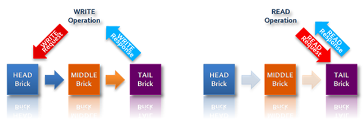
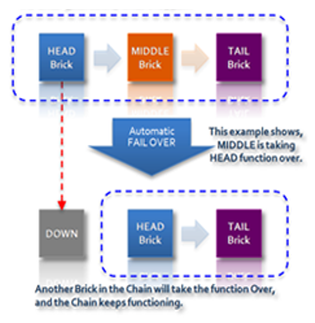
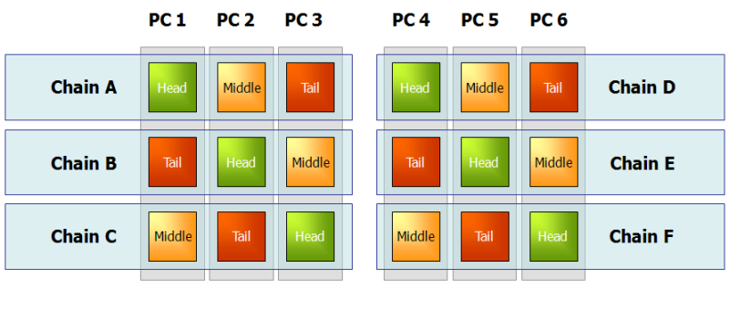
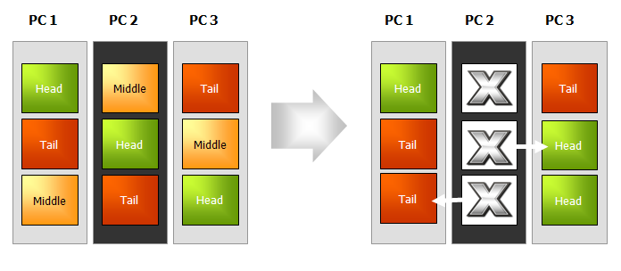

Table of Contents
- 1. Introduction
- 1.1. Why NOSQL?
- 1.2. Why Hibari?
- 1.2.1. Engineered in Erlang
- 1.2.2. Chain Replication for High Availability and Strong Consistency
- 1.2.3. Easy, Affordable Scalability
- 1.2.4. High Performance, Especially for Reads and Large Values
- 1.2.5. Simple But Powerful Client API
- 1.2.6. Production-Proven
- 1.2.7. Hibari Benefits for Developers, System Administrators, and Businesses
- 2. Getting Started
- 3. Client API: Native Erlang
- 4. Client API: UBF
- 4.1. The Hibari Server’s Implementation of the UBF Protocol Stack
- 4.2. UBF representation of strings vs. binaries
- 4.3. Steps for Using a UBF-based Protocol in Any Language
- 4.4. The Hibari UBF Protocol Contract
- 4.5. Using the UBF Client Library for Erlang
- 4.6. Using the UBF Client Library for Java
- 4.7. Using the EBF Client Library for Python
- 5. Client API: Thrift
- 6. Developer Utilities
- 7. Building Hibari from Source
- 8. Sample Application
- 9. Contributing to Hibari
Hibari is a production-ready, distributed, key-value, big data store. In the emerging field of "NOSQL" solutions to today’s mass-scale data storage challenges, Hibari stands out for several reasons:
- Hibari is the only open source key-value database to couple Erlang engineering with innovative chain replication technology. Erlang is the ideal programming foundation on which to build a robust, high-performance distributed storage solution. Chain replication delivers high throughput and availability without sacrificing data consistency.
- Hibari is the only open source KVDB built to the exacting standards of the carrier-class telecom sector, and proven in multi-million user telecom production environments.
Hibari delivers a distinctive feature matrix that includes:
- Per-table options for disk-based or RAM-only value storage
- Support for per-key expiration times and per-key custom meta-data
- Support for multi-key atomic transactions, within range limits
- A key timestamping mechanism that facilitates "test-and-set" type operations
- Automatic data rebalancing as the system scales
- Support for live code upgrades
- Multiple client API implementations
This introductory chapter will briefly address the recent emergence of NOSQL solutions to the challenges posed by the "Big Data" era before turning to describe more fully the distinctive benefits that Hibari provides to developers, administrators, and users of data-intensive applications.
The NOSQL "movement" is, first off, not an outright rejection of traditional relational database management systems (RDBMS) but rather a growing recognition that today’s data environment requires a diverse storage toolset that is "Not Only SQL (NOSQL)". Relational and NOSQL data storage solutions should be viewed as complements, with each approach better suited toward different types of applications and services.
The main driver of NOSQL has been the proliferation of applications and services that must store and serve terabytes or petabytes of data, often while striving to guarantee "always-on" availability and low latencies for end users. Organizations in many market sectors are grappling with the advent of Big Data, including but not limited to:
- Web properties — coping with the massive data requirements of search, e-commerce, social media, and user-generated content.
- Telecoms — managing and analyzing network logs and call data records for multi-millions of subscribers.
- Utilities — managing and analyzing the enormous data volume associated with smart grids.
- Financial services — storing and mining customer history data in order to analyze and model risk.
- Retail analytics — click-stream analysis and micro-targeting.
- Biotech — genome analysis.
Organizations in these and other data-intensive environments have been challenged to build data storage systems of unprecedented scale. Many such organizations have found their needs ill-met by traditional data storage approaches that center around relational database management systems and specialized high-end hardware. In particular:
- "Scaling up" a single RDBMS instance doesn’t achieve nearly the scale required, no matter how high-end the systems or how great the expenditure.
- "Scaling out" by sharding the system over multiple RDBMS instances entails enormous costs and enormous operational complexity, while at the same time forfeiting much of the power of the relational model.
Wanting Big Data capacity without crippling cost and complexity, some innovative organizations have sought a better way to scale. At the same time, with an ever-expanding array of data usage scenarios, it’s become apparent that not all scenarios require the complex querying and management functionality associated with an RDBMS. For some applications and services, SQL-structuring and strict ACID properties are overkill. Worse, in some environments they’re expensive overkill that can potentially hamstring service offerings in highly competitive markets that demand flexibility and responsiveness.
In short, recent years have seen a proliferation of services that require more data, with less structure.
Not surprisingly, some of the leading web enterprises have been at the forefront of the NOSQL movement. In particular, Google with its BigTable paper in 2006 and Amazon with its Dynamopaper in 2007 had a profound effect on the NOSQL market. A number of NOSQL solutions have drawn inspiration from either BigTable or Dynamo or both, and in the past couple years several solutions have been released into the open source community.
While NOSQL data storage solutions vary in their particulars, they have these basic traits in common:
- A simplified data model. Data models vary across specific solutions, and sometimes form the basis of a tripartite classification of NOSQL systems into 1) key-value data stores (such as Dynamo and Hibari); 2) column-oriented data stores (such as BigTable); and 3) document-oriented data stores (such as CouchDB). All variants, however, are simpler and more flexible in data model than the traditional RDBMS. That simplification tends to carry over to client APIs as well.
- Distribution across multiple nodes based on commodity PCs. Affordable Big Data capacity is achieved by scaling out across tens, hundreds, or even thousands of commodity PCs. Data partitioning schemes coupled with parallel processing of incoming requests deliver the needed high performance.
- Replication of data objects across multiple nodes, to ensure high availability in the event of component failures.
For much more on the history, merits, and design issues associated with NOSQL storage solutions, consult with your favorite search engine.
Hibari was developed internally by Gemini Mobile Technologies, a leading producer of mass-scale messaging and transaction systems for Tier 1 mobile operators in Asia, Europe, and the Americas. Gemini had need for a data store that was efficient, fast, flexible, and scalable, as well as robust enough to withstand the rigors of deployment in Tier 1 telecom production environments. Dissatisfied with the then-available options, Gemini in 2005 began work on what came to be Hibari (the name is Japanese for skylark; the kanji characters stand for "cloud bird"). With the system having in recent years matured and been proven in production, Gemini released Hibari to the open source community in July 2010 under the Apache 2.0 license. Gemini regards the open source community as the best venue in which Hibari can continue to perfect and grow.
This section describes some of the distinctive features that make Hibari a very attractive option for businesses and developers seeking a modern Big Data storage system:
Erlang is a general purpose programming language and runtime environment designed specifically to support reliable, high-performance distributed systems. Originally developed by Ericsson in the 1980s for building advanced telecom networking systems, Erlang/OTP (Open Telecom Platform) was open-sourced in 1998. Hibari is written entirely in Erlang.
Erlang provides a range of benefits that make it the ideal foundation for a distributed key-value storage solution:
- Concurrency. Erlang has extremely lightweight processes that communicate by message passing and have no shared memory. Scheduling, memory management, and other concurrency-related services are managed by the Erlang VM, placing no requirements for concurrency on the host operating system.
- Distribution. Erlang is designed specifically for distributed environments. Passing messages transparently via TCP, Erlang processes on different nodes communicate with each other in exactly the same way as do processes on the same node. The simple and efficient design facilitates massive parallelism and scalability of the sort required by a high-performance distributed storage system. With its prowess for concurrency and distributed processing, it has been suggested that Erlang can be regarded as a first-of-its-kind "application system", analogous to an operating system except running across and coordinating multiple hosts.
- Robustness. Erlang processes are completely independent of each other, with no data sharing. While functionally isolated, Erlang processes are able to monitor each other and to detect and respond to crashed processes, even on remote nodes.
- Portability. The same Erlang VM can run on Linux, Unix, Windows, Macintosh, or VxWorks. Distributed Erlang processes can seamlessly communicate with each other regardless of the heterogeneity of their host operating systems. This OS portability is a valuable facilitator of storage system elasticity, as system managers may need to mix and match hosts in response to fluid demand environments.
- Hot code upgrades. Erlang-based applications like Hibari support hot code upgrades: upgrades can be applied without shutting down the system. During the change-over, old and new code can run simultaneously. This is a key benefit for environments that require "always-on" availability for end users.
Other features reinforce Erlang’s suitability for reliable distributed applications, including incremental garbage collection, single-assignment variables, and robust exception handling.
The Hibari distributed key-value store implements a version of the chain replication methodology first proposed by van Renesse and Schneider to achieve redundancy and high availability without sacrificing data consistency. At a high level, chain replication in a Hibari storage cluster works as follows:
- Through consistent hashing, the key space is divided across multiple storage "chains".
- Each chain is composed of multiple logical storage "bricks", with each brick running in its own Erlang VM instance.
- Within each chain, the member bricks have differentiated roles. Client-requested updates to key-value pairs are written first to the "head" brick, then automatically replicated downstream to one or more "middle" bricks and finally to the "tail" brick, which returns an update acknowledgement to the client. By contrast, read requests are directed to the tail brick, which returns the response to the client.

While most distributed storage systems are able to guarantee only weak or eventual data consistency across replicas — placing the burden on the client application (and the client application developer) to manage the potential inconsistencies — Hibari with its chain replication implementation guarantees strong consistency. Data updates are considered complete, and are acknowledged to clients, only when they have replicated through the chain to the tail; and read requests are processed only by the tail. Consequently, after an object update is acknowledged to a Hibari client, other clients are guaranteed to see only the newest version of that object. This strong consistency is valuable in environments where eventual consistency is at odds with the service level expected by end users, or where system designers do not want to clutter client applications with the logic required to manage data inconsistency.
The "length" of a chain is configurable and can be based on your desired degree of replication and redundancy. For example, a chain of length four would have a head brick, two middle bricks, and a tail brick; while a three-brick chain would have a head, one middle, and a tail. A chain can also operate at length two (a head and tail, with no middle) and even at length one (one brick playing both the head role and the tail role).
Because chains can operate at any length, and because the system is able to detect failures within the chain and to adjust member brick roles accordingly, Hibari delivers high availability as well as strong data consistency. For example, if in a three-brick chain the head brick goes down, the middle brick automatically takes over the head brick role, allowing the chain to continue functioning normally:

If the new head brick failed also, the lone remaining brick would then play both the head role and the tail role, processing all writes and reads itself as a single-brick "chain".
While multiple logical bricks can run on a single physical node, for high availability it is of course desirable that a particular chain’s member bricks be deployed on separate machines. If you want to run multiple bricks per machine and also ensure high availability for each chain, an attractive deployment option is to "stripe" the chains across machines:

Note also that because head bricks (receiving incoming write requests) and tail bricks (replying to write requests and processing read requests) bear more load than do middle bricks, load balancing across machines can be achieved in part by allocating the different brick roles evenly, as in the diagram above.
In the event of a physical node failure, bricks within each impacted chain automatically shift roles, and each chain continues to provide normal service to clients:

For further information about chain replication, fail-over, and recovery in a Hibari storage system, and for information about Hibari’s redundantly structured cluster membership application called the Admin Server, see these sections of the Hibari System Administrator’s Guide:
Hibari provides Big Data scalability while minimizing the cost and operational complexity of cluster growth:
- Hibari scales horizontally by the addition of more chains, deployed on more physical nodes. The total storage and processing capacity of a Hibari cluster increases linearly as machines are added to the cluster.
- The system rebalances data storage distribution automatically as chains are added to (or removed from) the cluster, with no downtime. You can grow (or shrink) your Hibari storage cluster with no service interruption.
- Hibari runs on commodity PCs. Further, the system easily accommodates heterogeneous hardware resources. Bricks within the storage cluster can have different RAM and disk sizes, and different CPU speeds. You can tune Hibari’s consistent hash function to optimize your cluster’s utilization of mixed hardware. Each chain can be assigned a weighting factor that will increase or decrease that chain’s portion of the overall key space, relative to other chains.
In addition to supporting mixed hardware, Erlang-based Hibari can run on most any OS. With its easy adaptability to disparate hardware and operating systems, you can scale Hibari incrementally, with whatever resources you have available. It’s not necessary to buy all your resources at once, or all of the same kind.
The outer limits of Hibari’s horizontal scalability have not been definitely determined, but 200 to 250 nodes is a practical boundary due to the limitations of Erlang’s built-in network distribution implementation. Also, while Hibari chains could theoretically be stretched across multiple data centers to provide geographic redundancy, to date only single data center deployments have been tested and used in production. |
For further information on resizing a Hibari cluster, see Dynamic Cluster Reconfiguration in the Hibari System Administrator’s Guide.
Several features work in combination to drive high performance in a Hibari storage cluster, even at Big Data scale:
- The Erlang technology that underlies Hibari was specifically designed for and excels at distributed parallel processing.
- Hibari’s implementation of consistent hashing and chain replication partitions the key-space across multiple chains, enabling parallel simultaneous processing of requests incoming to individual chains. The distribution of data across chains is tunable to allow optimal utilization of heterogeneous hardware resources.
- Hibari’s chain replication implementation further aids performance by assigning storage bricks differentiated processing roles as head, middle, or tail. This division of labor particularly benefits read performance, as read requests are processed by "tail" bricks that do not bear the load of initial processing of write requests (since that work is done by "head" bricks).
- Hibari supports a number of performance-tuning options on a per-table basis. For example, while some distributed KVDBs support only disk-based storage or only RAM-based storage of value blobs, Hibari lets you choose disk-based or RAM-based storage on a per-table basis, depending on your application needs. Whichever storage option you choose, all data changes are logged to disk to ensure data durability in the event of power failures. A batch commit technique is used to minimize disk I/O.
Leveraging this feature set, Hibari is able to deliver scalable high performance that is competitive with leading open source NOSQL storage systems, while also providing the data durability and strong consistency that many systems lack. Hibari’s performance relative to other NOSQL systems is particularly strong for reads and for large value (> 200KB) operations. Hibari’s consistently high performance even for large values distinguishes the system from solutions that are tailored toward small value operations.
As one example of real-world performance, in a multi-million user webmail deployment Hibari is processing about 2200 transactions per second, with read latencies averaging between 1 and 20 milliseconds and write latencies averaging between 20 and 80 milliseconds.
As a key-value store, Hibari’s core data model and client API model are simple by design: blob-based key-value pairs can be inserted, retrieved, and deleted from lexicographically sorted tables. While Hibari thus provides the flexibility and scalability associated with key-value stores, the system also provides distinctive features that enhance the power of client applications and developers:
- Clients can optionally assign per-object expiration times.
- Clients can optionally assign per-object custom flags. This flexible, custom meta-data can be updated with or without updating the associated value blob, and can be retrieved with or without the value blob.
- Objects are automatically timestamped each time they are updated. This timestamping mechanism facilitates "test-and-set" type operations: clients can specify that a requested operation be performed only if the target key’s timestamp matches the client’s expectations.
- Within key-prefix range limits (specifically, within individual chains but not across chains), Hibari’s client API supports atomic transactions. This support for "micro-transactions" sets Hibari apart from other open source KVDBs and can greatly simplify the creation of robust client applications.
Hibari supports multiple client API implementations including:
- Native Erlang
- Universal Binary Format (UBF)
- Thrift
- Amazon S3
- JSON-RPC
You can develop Hibari client applications in a variety of languages including Java, C/C++, Python, Ruby, and Erlang.
For further information about Hibari’s client API, see Client API: Native Erlang and the subsequent client API chapters in this guide.
While initial development work on Hibari was geared generally toward the data storage demands of the Tier 1 telecom sector, as the system evolved it needed to meet the requirements of a particular major Asian carrier that wished to launch a GB webmail service. This customer’s requirements for Hibari included the following:
- Several million users from the start.
- Several billion stored messages within a few months of launch.
- Hundreds of TB storage capacity.
- Elasticity to support continual growth.
- Low system costs, particularly since the service would employ the "freemium" model.
- Individual messages could range in size from a few bytes to many MB with attachments.
- Support for per-object meta-data required.
- Strong consistency required, for interactive sessions.
- Data durability required — loss of messages or meta-data unacceptable.
- High availability — an "always on", branded service.
- Low latency, with < 1 second response times for end user transactions.
Hibari was built to meet these rigorous requirements, was hardened through extensive testing and trials, and went live in support of this large-scale webmail system at the beginning of 2010. The system now stores billions of messages on behalf of millions of end users, while meeting customer requirements for availability, latency, consistency, durability, and affordability.
Coinciding with Hibari’s development and fine tuning for this GB webmail service, the system was also deployed as a storage solution for two major Asian carriers' mobile social networking services. In this context, Hibari stores user profile data as well as digital goods of varying types and sizes.
For application developers, Hibari offers a distinctive set of benefits not often found in distributed key-value stores:
- Strong data consistency guarantees that relieve client applications of the burden of managing potential inconsistencies.
- Micro-transaction support that simplifies the creation of powerful applications.
- Per-object custom flags that facilitate flexible, service-specific application design.
- Support for a variety of API implementations and development languages.
For system administrators, Hibari provides valuable operational automations that simplify data management in a dynamic storage environment:
- Automatic data replication.
- Automatic failover when a node goes down.
- Automatic repair when a failed node comes back up.
- Automatic rebalancing of data as a cluster grows or shrinks.
For businesses as a whole, Hibari offers affordable Big Data scalability while delivering the high availability and low latencies that service users demand. Hibari is an appropriate storage solution for a range of data-intensive service scenarios including but not limited to large-scale messaging, social media, and archiving. Hibari offers particular value in environments that require strong data consistency and/or high performance across a variety of object types and sizes.
This section covers the following topics to help you get up and running with Hibari:
Hibari will run on any OS that the Erlang VM supports, which includes most Unix and Unix-like systems, Windows, and Mac OS X. See Implementation and Ports of Erlang from the official Erlang documentation for further information.
For guidance on hardware requirements in a production environment, see Notes on Brick Hardware in the Hibari System Administrator’s Guide.
Hibari’s requirements for third party software depend on whether you’re doing a single-node installation or a multi-node installation.
The node on which you plan to install Hibari must have the following software:
OpenSSL - http://www.openssl.org/
- Required for Erlang’s "crypto" module
When you install Hibari on multiple nodes you will use an installer tool that simplifies the cluster set-up process. When you use this tool you will identify the hosts on which you want Hibari to be installed, and the tool will manage the installation of Hibari onto those target hosts. You can run the tool itself from one of your target Hibari nodes or from a different machine. There are distinct requirements for third party software on the "installer node" (the machine from which you run the installer tool) and on the Hibari nodes (the machines on which Hibari will be installed and run.)
The installer node must have the software listed below. If you are missing any of these items, you can use the provided links for downloads and installation instructions.
- Bash - http://www.gnu.org/software/bash/
- Expect - http://www.nist.gov/el/msid/expect.cfm
- Perl - http://www.perl.org/
- SSH (client) - http://www.openssh.com/
Git - http://git-scm.com/
- Must be version 1.5.4 or newer
If you haven’t yet done so, please configure your email address and name for Git:
$ git config --global user.email "you@example.com" $ git config --global user.name "Your Name"
- If you haven’t yet done so, you must sign up for a GitHub account - https://github.com/
There are currently no known version requirements for Bash, Expect, Perl, or SSH.
The nodes on which you plan to install Hibari must have the software listed below.
- SSH (server) - http://www.openssh.com/
OpenSSL - http://www.openssl.org/
- Required for Erlang’s "crypto" module
Hibari is not yet available as a pre-built release. In the meanwhile, you can build Hibari from source. Follow the instructions in Section 7, “Building Hibari from Source”, and then return to this section to continue the set-up process.
When you build Hibari your output is two files that you will later use in the set-up process:
- A tarball package "hibari-X.Y.Z-DIST-ARCH-WORDSIZE.tgz"
- An md5sum file "hibari-X.Y.Z-DIST-ARCH-WORDSIZE-md5sum.txt"
X.Y.Z is the release version, DIST is the release distribution, ARCH is the release architecture, and WORDSIZE is the release wordsize.
A single-node Hibari system will not provide data replication and redundancy in the way that a multi-node Hibari cluster will. However, you may wish to deploy a simple single-node Hibari system for testing and development purposes.
Create a directory for running Hibari:
$ mkdir running-directory
Untar the Hibari tarball package that you created when you built Hibari from source:
$ tar -C running-directory -xvf hibari-X.Y.Z-DIST-ARCH-WORDSIZE.tgz
On your Hibari node, in the system’s |
Start Hibari:
$ running-directory/hibari/bin/hibari start
If this is the first time you’ve started Hibari, bootstrap the system:
$ running-directory/hibari/bin/hibari-admin bootstrap
The Hibari bootstrap process starts Hibari’s Admin Server on the single node and creates a single table "tab1" serving as Hibari’s default table. For information on creating additional tables, see Creating New Tables.
Do these quick checks to verify that your single-node Hibari system is up and running.
Confirm that you can open the "Hibari Web Administration" page:
$ your-favorite-browser http://127.0.0.1:23080
Confirm that you can successfully ping the Hibari node:
$ running-directory-name/hibari/bin/hibari ping
A single-node Hibari system is hard-coded to listen on the localhost address 127.0.0.1. Consequently the Hibari node is reachable only from the node itself. |
Before you install Hibari on to the target nodes you must complete these preparation steps:
- Set up required user privileges on the installer node and on the target Hibari nodes.
- Download the Cluster installer tool.
- Configure the Cluster installer tool.
The system user ID that you use to perform the installation must be different than the Hibari runtime user. Your installing user account ($USER) must be set up as follows:
- $USER must exist on the installer node and also on the target Hibari nodes.
- $USER on the installer node must have SSH private/public keys, with the SSH agent set up to enable password-less SSH login.
- $USER account must be accessible with password-less SSH login on the target Hibari nodes.
- $USER must have password-less sudo access on the target Hibari nodes.
If your installing user account does not currently have the above privileges, follow these steps:
As the root user, add your installing user ($USER) to the installer node. Then on each of the Hibari nodes, add your installing user and grant your user password-less sudo access:
$ useradd $USER $ passwd $USER $ visudo # append the following line and save it $USER ALL=(ALL) NOPASSWD: ALL
![[Note]](./images/icons/note.png)
If you get a "sudo: sorry, you must have a tty to run sudo" error while testing sudo, try commenting out following line inside of the
/etc/sudoersfile:$ visudo Defaults requiretty
On the installer node, create a new SSH private/public key for your installing user:
$ ssh-keygen # enter your password for the private key $ eval `ssh-agent` $ ssh-add ~/.ssh/id_rsa # re-enter your password for the private key
On each of the Hibari nodes:
-
Append an entry for the installer node to the
\~/.ssh/known_hostsfile. Append an entry for your public SSH key to the
~/.ssh/authorized_keysfile.In the example below, the target Hibari nodes are dev1, dev2, and dev3:
$ ssh-copy-id -i ~/.ssh/id_rsa.pub $USER@dev1 $ ssh-copy-id -i ~/.ssh/id_rsa.pub $USER@dev2 $ ssh-copy-id -i ~/.ssh/id_rsa.pub $USER@dev3
If your installer node will be one of the Hibari cluster nodes, make sure that you ssh-copy-id to the installer node also.
-
Append an entry for the installer node to the
Confirm that password-less SSH access to the each of the Hibari nodes works as expected.
$ ssh $USER@dev1 $ ssh $USER@dev2 $ ssh $USER@dev3
If you need more help with SSH set-up, check http://inside.mines.edu/~gmurray/HowTo/sshNotes.html. |
"Cluster" is a simple tool for installing, configuring, and bootstrapping a cluster of Hibari nodes. The tool is not part of the Hibari package itself, but is available from GitHub.
The Cluster tool should meet the needs of most users. However, this tool’s "target node" recipe is currently Linux-centric (e.g. useradd, userdel, …). Patches and contributions for other OS and platforms are welcome. For non-Linux deployments, the Cluster tool is rather simple so installation can be done manually by following the tool’s recipe. |
Create a working directory into which you will download the Cluster installer tool:
$ mkdir working-directory
Download the Cluster tool’s Git repository from GitHub:
$ cd working-directory $ git clone git://github.com/hibari/clus.git
The download creates a sub-directory
clusunder which the installer tool and various supporting files are stored.
The Cluster tool requires some basic configuration information that indicates how you want your Hibari cluster to be set up. You will create a simple text file that specifies your desired configuration, and then later use the file as input when you run the Cluster tool.
It’s simplest to create the file in the same working directory in
which you downloaded the cluster tool. You can give the file any name
that you want; for purposes of these instructions we will use the file
name hibari.config.
Below is a sample hibari.config file. The file that you create must
include all of these parameters, and the values must be formatted in
the same way as in this example (with parentheses and quotation marks
as shown). Parameter descriptions follow the example file.
ADMIN_NODES=(dev1 dev2 dev3)
BRICK_NODES=(dev1 dev2 dev3)
BRICKS_PER_CHAIN=2
ALL_NODES=(dev1 dev2 dev3)
ALL_NETA_ADDRS=("10.181.165.230" "10.181.165.231" "10.181.165.232")
ALL_NETB_ADDRS=("10.181.165.230" "10.181.165.231" "10.181.165.232")
ALL_NETA_BCAST="10.181.165.255"
ALL_NETB_BCAST="10.181.165.255"
ALL_NETA_TIEBREAKER="10.181.165.1"
ALL_HEART_UDP_PORT="63099"
ALL_HEART_XMIT_UDP_PORT="63100"ADMIN_NODES- Host names of the nodes that will be eligible to run the Hibari Admin Server. For complete information on the Admin Server, see The Admin Server Application in the Hibari System Administrator’s Guide.
BRICK_NODES- Host names of the nodes that will serve as Hibari storage bricks. Note that in the sample configuration file above there are three storage brick nodes (dev1, dev2, and dev3), and these three nodes are each eligible to run the Admin Server.
BRICKS_PER_CHAIN- Number of bricks per replication chain. For example, with two bricks per chain there will be two copies of the data stored in the chain (one copy on each brick); with three bricks per chain there will be three copies, and so on. For an overview of chain replication, see Chain Replication for High Availability and Strong Consistency in this document. For chain replication detail, see the Hibari System Administrator’s Guide.
ALL_NODES-
This list of all Hibari nodes is the union of
ADMIN_NODESandBRICK_NODES.
-
This list of all Hibari nodes is the union of
ALL_NETA_ADDRS-
As described in
The
Partition Detector Application in the Hibari System
Administrator’s guide, the nodes in a multi-node Hibari cluster
should be connected by two networks, Network A and Network B, in
order to detect and manage network partitions. The
ALL_NETA_ADDRSparameter specifies the IP addresses of each Hibari node within Network A, which is the network through which data replication and other Erlang communications will take place. The list of the IP addresses should correspond in order to host names you listed in theALL_NODESsetting.
-
As described in
The
Partition Detector Application in the Hibari System
Administrator’s guide, the nodes in a multi-node Hibari cluster
should be connected by two networks, Network A and Network B, in
order to detect and manage network partitions. The
ALL_NETB_ADDRS-
IP addresses of each Hibari node within Network B. Network B is
used only for heartbeat broadcasts that help to detect network
partitions. The list of the IP addresses should correspond in
order to host names you listed in the
ALL_NODESsetting.
-
IP addresses of each Hibari node within Network B. Network B is
used only for heartbeat broadcasts that help to detect network
partitions. The list of the IP addresses should correspond in
order to host names you listed in the
ALL_NETA_BCAST- IP broadcast address for Network A.
ALL_NETB_BCAST- IP broadcast address for Network B.
ALL_NETA_TIEBREAKER- Within Network A, the IP address for the network monitoring application to use as a "tiebreaker" in the event of a partition. If the network monitoring application on a Hibari node determines that Network A is partitioned and Network B is not partitioned, then if the Network A tiebreaker IP address responds to a ping, then the local node is on the "correct" side of the partition. Ideally the tiebreaker should be the address of the Layer 2 switch or Layer 3 router that all Erlang network distribution communications flow through.
ALL_HEART_UDP_PORT- UDP port for heartbeat listener.
ALL_HEART_XMIT_UDP_PORT- UDP port for heartbeat transmitter.
For more detail on network monitoring configuration settings, see the partition-detector’s OTP application source file (https://github.com/hibari/partition-detector/raw/master/src/partition_detector.app.src).
In a production setting, Network A and Network B should be physically different networks and network interfaces. However, for testing and development purposes the same physical network can be used for Network A and Network B (as in the sample configuration file above). |
As final configuration steps, on each Hibari node:
Make sure that the
/etc/hostsfile has entries for all Hibari nodes in the cluster. For example:10.181.165.230 dev1.your-domain.com dev1 10.181.165.231 dev2.your-domain.com dev2 10.181.165.232 dev3.your-domain.com dev3
-
In the system’s
/etc/sysctl.conffile, setvm.swappiness=0. Swappiness is not desirable for an Erlang VM.
From your installer node, logged in as the installer user, take these steps to create your Hibari cluster:
In the working directory in which you downloaded the Cluster tool and created your cluster configuration file, place a copy of the Hibari tarball package and md5sum file:
$ cd working-directory $ ls -1 clus hibari-X.Y.Z-DIST-ARCH-WORDSIZE-md5sum.txt hibari-X.Y.Z-DIST-ARCH-WORDSIZE.tgz hibari.config $
Create the "hibari" user on all Hibari nodes:
$ for i in dev1 dev2 dev3 ; do ./clus/priv/clus.sh -f init hibari $i ; done hibari@dev1 hibari@dev2 hibari@dev3
If the "hibari" user already exists on the target nodes, the -f option will forcefully delete and then re-create the "hibari" user.
Install the Hibari package on all Hibari nodes, via the newly created "hibari" user:
$ ./clus/priv/clus-hibari.sh -f init hibari hibari.config hibari-X.Y.Z-DIST-ARCH-WORDSIZE.tgz hibari@dev1 hibari@dev2 hibari@dev3
By default the Cluster tool installs Hibari into
/usr/local/var/libon the target nodes. If you prefer a different location, before doing the install open theclus.shscript (in your working directory, under/clus/priv/) and edit theCT_HOMEBASEDIRvariable.
You can use the Cluster installer tool to start and stop your multi-node Hibari cluster, working from the same node from which you managed the installation process. Note that in each of the Hibari commands in this section you’ll be referencing the name of the Cluster tool configuration file that you created during the installation procedure.
Change to the working directory in which you downloaded the Cluster tool, then start Hibari on all Hibari nodes via the "hibari" user:
$ cd working-directory $ ./clus/priv/clus-hibari.sh -f start hibari hibari.config hibari@dev1 hibari@dev2 hibari@dev3
If this is the first time you’ve started Hibari, bootstrap the system via the "hibari" user:
$ ./clus/priv/clus-hibari.sh -f bootstrap hibari hibari.config hibari@dev1 => hibari@dev1 hibari@dev2 hibari@dev3
The Hibari bootstrap process starts Hibari’s Admin Server on the first eligible admin node and creates a single table "tab1" serving as Hibari’s default table. For information about creating additional tables, see Creating New Tables.
If bootstrapping fails due to "another_admin_server_running" error, please stop the other Hibari cluster(s) running on the network; or reconfigure the Cluster tool to assign Hibari heartbeat listener ports that are not in use by another Hibari cluster or other applications and then repeat the cluster installation procedure.
Do these simple checks to verify that Hibari is up and running.
Confirm that you can open the "Hibari Web Administration" page:
$ your-favorite-browser http://dev1:23080
Confirm that you can successfully ping each of your Hibari nodes:
$ ./clus/priv/clus-hibari.sh -f ping hibari hibari.config hibari@dev1 ... pong hibari@dev2 ... pong hibari@dev3 ... pong
The simplest way to create a new table is via the Admin Server’s
GUI. Open http://localhost:23080/ and click the "Add a table" link.
In addition to the GUI, the hibari-admin tool can also be used to
create a new table. See the hibari-admin tool for usage details.
For information about creating tables using the administrative API, see the Hibari System Administrator’s Guide. |
When adding a table through the GUI, you have these table configuration options:
Local- Boolean. If true, all bricks for storing the new table’s data will be created on the local node, i.e. the node that’s running the Admin Server. If false, then the "NodeList" field is used to specify which cluster nodes the new bricks should use.
BigData- Boolean. If true, value blobs will be stored on disk.
DiskLogging- Boolean. If true, all updates will be written to the write-ahead log for persistence. If false, bricks will run faster but at the expense of data loss in a cluster-wide power failure.
SyncWrites-
Boolean. If true, all writes to the write-ahead log will be
flushed to stable storage via the
fsync(2)system call. If false, bricks will run faster but at the expense of data loss in a cluster-wide power failure.
-
Boolean. If true, all writes to the write-ahead log will be
flushed to stable storage via the
VarPrefixBoolean. If true, then a variable-length prefix of the key will be used as input for the consistent hashing function. If false, the entire key will be used.
Many applications can benefit from using a variable-length or fixed-length prefix hashing scheme. As an example, consider an application that maintains state for various users. The app wishes to use micro-transactions to update various keys (in the same table) related to that user. The table can be created to use
VarPrefix=true, together withVarPrefixSeparator=47(ASCII 47 is the forward slash character) andVarPrefixNumSeparator=2, to create a hashing scheme that will guarantee that keys/FooUser/summaryand/FooUser/thing1and/FooUser/thing9are all stored by the same chain.The HTTP interface for creating tables does not expose the fixed-length key prefix scheme. The Erlang API must be used in this case.
VarPrefixSeparator- Integer. Define the character used for variable-length key prefix calculation. Note that the default value of ASCII 47 (the "/" character), or any other character, does not imply any UNIX/POSIX style file or directory semantics.
VarPrefixNumSeparators-
Integer. Define the number of
VarPrefixSeparatorbytes, and all bytes in between, used for consistent hashing. IfVarPrefixSeparator=47andVarPrefixNumSeparators=3, then for a key such as/foo/bar/baz, the prefix used for consistent hashing will be/foo/bar/.
-
Integer. Define the number of
Bricks-
Integer. If
Local=true(see above), then this integer defines the total number of logical bricks that will be created on the local node. This value is ignored ifLocal=false.
-
Integer. If
BPCInteger. Define the number of bricks per chain.
The algorithm used for creating chain → brick mapping is based on a "striping" principle: enough chains are laid across bricks in a stripe-wise manner so that all nodes (aka physical bricks) will have the same number of logical bricks in head, middle, and tail roles. See the example in the Hibari System Administrator’s Guide of 3 chains striped across three nodes.
The Erlang API must be used to create tables with other chain layout patterns.
NodeList-
Comma-separated string. If
Local=false, specify the list of nodes that will run logical bricks for the new table. Each node in the comma-separated list should take the formNodeName@HostName. For example, usehibari1@machine-a, hibari1@machine-b, hibari1@machine-cto specify three nodes.
-
Comma-separated string. If
NumNodesPerBlockInteger. If
Local=false, then this integer will affect the striping behavior of the default chain striping algorithm. This value must be zero (i.e. this parameter is ignored) or a multiple of theBPCparameter.For example, if
NodeListcontains nodes A, B, C, D, E, and F, then the following striping patterns would be used:-
NumNodesPerBlock=0would stripe across all 6 nodes for 6 chains total. -
NumNodesPerBlock=2andBPC=2would stripe 2 chains across nodes A & B, 2 chains across C & D, and 2 chains across E & F. -
NumNodesPerBlock=3andBPC=3would stripe 3 chains across nodes A & B & C and 3 chains across D & E & F.
-
BlockMultFactorInteger. If
Local=false, then this integer will affect the striping behavior of the default chain striping algorithm. This value must be zero (i.e. this parameter is ignored) or greater than zero.For example, if
NodeListcontains nodes A, B, C, D, E, and F, then the following striping patterns would be used:-
NumNodesPerBlock=0andBlockMultFactor=0would stripe across all 6 nodes for 6 chains total. -
NumNodesPerBlock=2andBlockMultFactor=5andBPC=2would stripe 2*5=10 chains across nodes A & B, 2*5=10 chains across C & D, and 2*5=10 chains across E & F, for a total of 30 chains. -
NumNodesPerBlock=3andBlockMultFactor=4andBPC=3would stripe 3*4=12 chains across nodes A & B & C and 3*4=12 chains across D & E & F, for a total of 24 chains.
-
As a key-value database, Hibari provides a simple client API with primitive operations for inserting, retrieving, and deleting data. Within certain restrictions, the API also supports compound operations that optionally can be executed as atomic transactions.
More specifically, Hibari’s client API supports the operations listed below. For details on the native Erlang API for each operation, follow the links.
Data Insertion
Add a key-value pair that does not yet exist, along with optional flags:
Assign a new value and/or new flags to a key that already exists:
Set a key-value pair and optional flags regardless of whether the key yet exists:
Data Retrieval
Retrieve a key and optionally its associated value and flags:
Retrieve multiple lexicographically contiguous keys and optionally their associated values and flags:
Data Deletion
Delete a key-value pair and associated flags:
Compound Operations
Execute a specified list of operations, optionally as an atomic transaction:
Fold Operations
Implement a fold operation across all keys in a table:
Implement a fold operation across all keys having a specified prefix:
If desired, clients can apply a "test 'n set" logic to data insertion, retrieval, and deletion operations so that the operation will be executed only if the target key has the exact timestamp specified in the request.
The following provides a high level introduction to Erlang basic data types that are referenced in this chapter. This material is excerpted with minor modifications from the official Erlang documentation on data types. For further information, see the official Erlang documentation.
All Erlang commands must conclude with a period (.). |
- Term
- A piece of data of any data type is called a term.
- Number
- There are two types of numeric literals, integers and floats.
- Atom
An atom is a literal, a constant with name. An atom should be enclosed in single quotes (') if it does not begin with a lower-case letter or if it contains other characters than alphanumeric characters, underscore (_), or @. Optionally, any atom can be enclosed in single quotes. For example:
hello phone_number 'Monday' 'phone number' 'hello' 'phone_number'
- Bit String and Binary
A bit string is used to store an area of untyped memory. Bit strings are expressed using Erlang bit syntax. A bit string that consists of a number of bits that is evenly divisible by eight is called a binary. For example:
<<10,20>> <<"ABC">>
- Tuple
A tuple is a compound data type with a fixed number of terms, enclosed by braces:
{Term1,...,TermN}- List
A list is a compound data type with a variable number of terms, enclosed by square brackets:
[Term1,...,TermN]
- String
- Strings are enclosed in double quotes ("), but are not a true data type in Erlang. Instead a string "hello" is shorthand for the list [$h,$e,$l,$l,$o], that is [104,101,108,108,111].
- Boolean
-
There is no Boolean data type in Erlang. Instead the atoms
trueandfalseare used to denote Boolean values.
If a Hibari table were represented within an SQL database, it would look something like this:
CREATE TABLE foo (
BLOB key;
BLOB value;
INTEGER timestamp; -- Monotonically increasing
INTEGER expiration_time; -- Usually zero
LIST OF ATOMS_AND_TWO_TUPLES flags; -- Metadata stored in RAM for speed
) PRIMARY KEY key;Hibari table names use the Erlang data type “atom”. The types of all key-related attributes are presented below.
| Attribute Name | Erlang data type | Storage Location | Description |
|---|---|---|---|
Key | binary | RAM | A binary blob of any size, though due to RAM storage the key should be small enough for all keys to fit in RAM. |
Value | binary | RAM or disk | A binary blob of any size, though practical constraints limit value blobs to 16MB or so. |
Timestamp | integer | RAM | A monotonically increasing counter, usually (but not always) based on the client’s wall-clock time. Updating a key with a timestamp smaller than the key’s current timestamp is not permitted. |
Expiration Time | integer | RAM | A UNIX |
Flags | list | RAM | This attribute cannot be represented in plain SQL. It is a list of atoms and/or {atom(), term()} pairs. Heavy use of this attribute is discouraged due to RAM-based storage. |
"Storage location = RAM" means that, during normal query handling, data is retrieved from a copy in RAM. All modifications of any/all attributes of a key are written to the write-ahead log to prevent data loss in case of a cluster-wide power failure. See ??? for more details.
"Store location = disk" means that the value of the attribute is not
stored in RAM. Metadata in RAM contains a pointer to the attribute’s
location:file #, byte offset, and length. A log sequence file inside
the common log must be opened, call lseek(2), and then read(2) to
retrieve the attribute.
- Best case
- Zero disk seeks are required to read a key’s value blob from disk, because all data in question is in the OS’s page cache.
- Typical case
- One seek and read is required: the file’s inode info is cached, but the desired file page(s) is not cached.
- Worse case
- The file system will need to perform additional seeks and reads to read intermediate directory data, inode, and indirect storage block data within the inode.
The practical constraints on maximum value blob size are affected by
total blob size and frequency of large blob access. For example,
storing an occasional 64MB value blob is different than a 100% write
workload of 100% 64MB value blobs. The Hibari client API does not
have a method to update or fetch less than the entire value blob, so a
brick can be blocked for many seconds if it tried to operate on (for
example) even a single 4GB blob. In addition, other processes can be
blocked by 'busy_dist_port' events while processing big value blobs.
SYNOPSIS
- brick_simple:add(Tab, Key, Value, ExpTime, Flags, Timeout).
DESCRIPTION
-
Add
KeyandValuepair (and optionalFlags) to the tableTabif the key does not already exist. The operation will fail ifKeyalready exists.
PARAMETERS
Tab
- Name of the table to which to add the key-value pair.
- Mandatory.
Type:
-
Tab = table() -
table() = atom()
-
Key
- Key to add to the table, in association with a paired value.
- Mandatory.
Type:
-
Key = key() -
key() = iodata() -
iodata() = iolist() | binary() iolist() = [char() | binary() | iolist()]While the
Keymay be specified as eitheriolist()orbinary(), it will be converted into binary before operation execution. The same is true ofValue.
-
Value
- Value to associate with the key.
- Mandatory.
Type:
-
Value = val() -
val() = iodata() -
iodata() = iolist() | binary() -
iolist() = [char() | binary() | iolist()]
-
ExpTime
- Time at which the key will expire, expressed as a Unix time_t().
- Optional; defaults to 0 (no expiration).
Type:
-
ExpTime = exp_time() -
exp_time() = time_t() -
time_t() = integer()
-
Flags
- List of operational flags to apply to the ‘add’ operation, and/or custom property flags to associate with the key-value pair in the database. Heavy use of custom property flags is discouraged due to RAM-based storage.
- Optional; defaults to empty list.
Type:
-
Flags = flags_list() -
flags_list() = [do_op_flag() | property()] -
do_op_flag() = 'value_in_ram' -
property() = atom() | {term(), term()}
-
Operational flag usage
'value_in_ram'Store the value blob in RAM, overriding the default storage location of the brick.
This flag has not yet been extensively tested by Gemini QA.
Timeout
- Operation timeout in milliseconds.
- Optional; defaults to 15000.
Type:
-
Timeout = timeout() -
timeout() = integer() | 'infinity'
-
RETURNS
Success return
-
'ok'
-
Error returns
{'key_exists',timestamp()}- The operation failed because the key already exists.
-
timestamp() = integer()
'invalid_flag_present'-
The operation failed because an invalid
do_op_flag()was found in theFlagsargument.
-
The operation failed because an invalid
'brick_not_available'- The operation failed because the chain that is responsible for this key is currently length zero and therefore unavailable.
{{'nodedown',node()},{'gen_server','call',term()}}- The operation failed because the server brick handling the request has crashed or else a network partition has occurred between the client and server. The client should resend the query after a short delay, on the assumption that the Admin Server will have detected the failure and taken steps to repair the chain.
-
node() = atom()
ALIASES
brick_simple:add/3
-
brick_simple:add(Tab, Key, Value).
-
brick_simple:add/4
-
brick_simple:add(Tab, Key, Value, Flags). -
brick_simple:add(Tab, Key, Value, Timeout).
-
EXAMPLES
Successful adding of a new key-value pair:
> brick_simple:add(tab1, <<"foo">>, <<"Hello, world!">>). ok
Failed attempt to add a key that already exists:
> brick_simple:add(tab1, <<"foo">>, <<"Goodbye, world!">>). {key_exists,1271542959131192}Successful adding of a new key-value pair, with value to be stored in RAM regardless of brick’s default storage setting:
> brick_simple:add(tab1, "foo1", "this is value1", ['value_in_ram']). ok
Successful adding of a new key-value pair, using a non-default operation timeout:
> brick_simple:add(tab1, "foo2", "this is value2", 20000). ok
SYNOPSIS
- brick_simple:replace(Tab, Key, Value, ExpTime, Flags, Timeout).
DESCRIPTION
-
Replace
KeyandValuepair (and optionalFlags) in the tableTabif the key already exists. The operation will fail ifKeydoes not already exist.
PARAMETERS
Tab
- Name of the table in which to replace the key-value pair.
- Mandatory.
Type:
-
Tab = table() -
table() = atom()
-
Key
- Key to replace in the table, in association with a new paired value.
- Mandatory.
Type:
-
Key = key() -
key() = iodata() -
iodata() = iolist() | binary() iolist() = [char() | binary() | iolist()]While the
Keymay be specified as eitheriolist()orbinary(), it will be converted into binary before operation execution. The same is true ofValue.
-
Value
- New value to associate with the key.
- Mandatory.
Type:
-
Value = val() -
val() = iodata() -
iodata() = iolist() | binary() -
iolist() = [char() | binary() | iolist()]
-
ExpTime
- Time at which the key will expire, expressed as a Unix time_t().
- Optional; defaults to 0 (no expiration).
Type:
-
ExpTime = exp_time() -
exp_time() = time_t() -
time_t() = integer()
-
Flags
- List of operational flags to apply to the ‘replace’ operation, and/or custom property flags to associate with the key-value pair in the database. Heavy use of custom property flags is discouraged due to RAM-based storage.
- Optional; defaults to empty list.
Type:
-
Flags = flags_list() -
flags_list() = [do_op_flag() | property()] -
do_op_flag() = {'testset', timestamp()} |'value_in_ram' -
timestamp() = integer() -
property() = atom() | {term(), term()}
-
Operational flag usage
{'testset', timestamp()}-
Fail the operation if the existing key’s timestamp is not
exactly equal to
timestamp(). If used inside a micro-transaction, abort the transaction if the key’s timestamp is not exactly equal totimestamp().
-
Fail the operation if the existing key’s timestamp is not
exactly equal to
'value_in_ram'Store the value blob in RAM, overriding the default storage location of the brick.
This flag has not yet been extensively tested by Gemini QA.
Timeout
- Operation timeout in milliseconds.
- Optional; defaults to 15000.
Type:
-
Timeout = timeout() -
timeout() = integer() | 'infinity'
-
RETURNS
Success return
-
'ok'
-
Error returns
'key_not_exist'- The operation failed because the key does not exist.
{'ts_error', timestamp()}-
The operation failed because the
{'testset', timestamp()}flag was used and there was a timestamp mismatch. Thetimestamp()in the return is the current value of the existing key’s timestamp. -
timestamp() = integer()
-
The operation failed because the
'invalid_flag_present'-
The operation failed because an invalid
do_op_flag()was found in theFlagsargument.
-
The operation failed because an invalid
'brick_not_available'- The operation failed because the chain that is responsible for this key is currently length zero and therefore unavailable.
{{'nodedown',node()},{'gen_server','call',term()}}- The operation failed because the server brick handling the request has crashed or else a network partition has occurred between the client and server. The client should resend the query after a short delay, on the assumption that the Admin Server will have detected the failure and taken steps to repair the chain.
-
node() = atom()
ALIASES
brick_simple:replace/3
-
brick_simple:replace(Tab, Key, Value).
-
brick_simple:replace/4
-
brick_simple:replace(Tab, Key, Value, Flags). -
brick_simple:replace(Tab, Key, Value, Timeout).
-
EXAMPLES
Successful replacement of a key-value pair:
> brick_simple:replace(tab1, <<"foo">>, <<"Goodbye, world!">>). ok
Failed attempt to replace a key that does not yet exist:
> brick_simple:replace(tab1, <<"key3">>, <<"new and improved value">>). key_not_exist
Successful replacement of a key-value pair, with value to be stored in RAM regardless of brick’s default storage setting:
> brick_simple:replace(tab1, "foo", "You again, world!", ['value_in_ram']). ok
Failed attempt to replace a key for which we have incorrectly specified its current timestamp:
> brick_simple:replace(tab1, "foo", "Whole new value", [{'testset', 12345}]). {ts_error,1271543165272987}Successful replacement of a key-value pair for which we have correctly specified its current timestamp:
> brick_simple:replace(tab1, "foo", "Whole new value", [{'testset', 1271543165272987}]). okSuccessful replacement of a key-value pair, using a non-default operation timeout:
> brick_simple:replace(tab1, "foo", "Foo again?", 30000). ok
SYNOPSIS
- brick_simple:set(Tab, Key, Value, ExpTime, Flags, Timeout).
DESCRIPTION
-
Set
KeyandValuepair (and optionalFlags) in the tableTab, regardless of whether or not the key already exists.
PARAMETERS
Tab
- Name of the table in which to set the key-value pair.
- Mandatory.
Type:
-
Tab = table() -
table() = atom()
-
Key
- Key to set in the table, in association with a paired value.
- Mandatory.
Type:
-
Key = key() -
key() = iodata() -
iodata() = iolist() | binary() iolist() = [char() | binary() | iolist()]While the
Keymay be specified as eitheriolist()orbinary(), it will be converted into binary before operation execution. The same is true ofValue.
-
Value
- Value to associate with the key.
- Mandatory.
Type:
-
Value = val() -
val() = iodata() -
iodata() = iolist() | binary() -
iolist() = [char() | binary() | iolist()]
-
ExpTime
- Time at which the key will expire, expressed as a Unix time_t().
- Optional; defaults to 0 (no expiration).
Type:
-
ExpTime = exp_time() -
exp_time() = time_t() -
time_t() = integer()
-
Flags
- List of operational flags to apply to the ‘set’ operation, and/or custom property flags to associate with the key-value pair in the database. Heavy use of custom property flags is discouraged due to RAM-based storage.
- Optional; defaults to empty list.
Type:
-
Flags = flags_list() -
flags_list() = [do_op_flag() | property()] -
do_op_flag() = {'testset', timestamp()} |'value_in_ram' -
timestamp() = integer() -
property() = atom() | {term(), term()}
-
Operational flag usage
{'testset', timestamp()}-
Fail the operation if the existing key’s timestamp is not
exactly equal to
timestamp(). If used inside a micro-transaction, abort the transaction if the key’s timestamp is not exactly equal totimestamp(). Using this flag withsetwill result in an error if the key does not already exist or if the key exists but has a non-matching timestamp.
-
Fail the operation if the existing key’s timestamp is not
exactly equal to
'value_in_ram'Store the value blob in RAM, overriding the default storage location of the brick.
This flag has not yet been extensively tested by Gemini QA.
Timeout
- Operation timeout in milliseconds.
- Optional; defaults to 15000.
Type:
-
Timeout = timeout() -
timeout() = integer() | 'infinity'
-
RETURNS
Success return
-
'ok'
-
Error returns
'key_not_exist'-
The operation failed because the
{'testset', timestamp()}flag was used and the key does not exist.
-
The operation failed because the
{'ts_error', timestamp()}-
The operation failed because the
{'testset', timestamp()}flag was used and there was a timestamp mismatch. Thetimestamp()in the return is the current value of the existing key’s timestamp. -
timestamp() = integer()
-
The operation failed because the
'invalid_flag_present'-
The operation failed because an invalid
do_op_flag()was found in theFlagsargument.
-
The operation failed because an invalid
'brick_not_available'- The operation failed because the chain that is responsible for this key is currently length zero and therefore unavailable.
{{'nodedown',node()},{'gen_server','call',term()}}- The operation failed because the server brick handling the request has crashed or else a network partition has occurred between the client and server. The client should resend the query after a short delay, on the assumption that the Admin Server will have detected the failure and taken steps to repair the chain.
-
node() = atom()
ALIASES
brick_simple:set/3
-
brick_simple:set(Tab, Key, Value).
-
brick_simple:set/4
-
brick_simple:set(Tab, Key, Value, Flags). -
brick_simple:set(Tab, Key, Value, Timeout).
-
EXAMPLES
Successful setting of a key-value pair:
> brick_simple:set(tab1, <<"key4">>, <<"cool value">>). ok
Successful setting of a key-value pair, with value to be stored in RAM regardless of brick’s default storage setting:
> brick_simple:set(tab1, "goo", "value6", ['value_in_ram']). ok
Failed attempt to set a key-value pair, when we have used the
testsetflag but the key does not yet exist:> brick_simple:set(tab1, "boo", "hoo", [{'testset', 1271543165272987}]). key_not_existSuccessful setting of a key-value pair, when we have used the
testsetflag and the key does already exist and its timestamp matches our specified timestamp:> brick_simple:set(tab1, "goo", "value7", [{'testset', 1271543165272432}]). ok
SYNOPSIS
- brick_simple:get(Tab, Key, Flags, Timeout).
DESCRIPTION
-
From table
Tab, retrieveKeyand specified attributes of the key (as determined byFlags).
PARAMETERS
Tab
- Name of the table from which to retrieve the key.
- Mandatory.
Type:
-
Tab = table() -
table() = atom()
-
Key
- Key to retrieve from the table.
- Mandatory.
Type:
-
Key = key() -
key() = iodata() -
iodata() = iolist() | binary() iolist() = [char() | binary() | iolist()]While the
Keymay be specified as eitheriolist()orbinary(), it will be converted into binary before operation execution.
-
Flags
- List of operational flags to apply to the ‘get’ operation.
- Optional; defaults to empty list.
Type:
-
Flags = flags_list() -
flags_list() = [do_op_flag()] -
do_op_flag() = 'get_all_attribs' | 'witness' | {'testset', timestamp()} | 'must_exist' | 'must_not_exist' -
timestamp() = integer()
-
Operational flag usage
'get_all_attribs'-
Return all attributes of the key. May be used in combination
with the
witnessflag.
-
Return all attributes of the key. May be used in combination
with the
'witness'- Do not return the value blob in the result. This flag will guarantee that the brick does not require disk access to satisfy this request.
{'testset', timestamp()}-
Fail the operation if the key’s timestamp is not exactly equal
to
timestamp(). If used inside a micro-transaction, abort the transaction if the key’s timestamp is not exactly equal totimestamp(). This flag has priority over the'must_exist'and'must_not_exist'flags.
-
Fail the operation if the key’s timestamp is not exactly equal
to
'must_exist'- For use inside a micro-transaction: abort the transaction if the key does not exist.
'must_not_exist'- For use inside a micro-transaction: abort the transaction if the key exists. This flag may be useful when the relationship between two or more keys is important to the client application.
Timeout
- Operation timeout in milliseconds.
- Optional; defaults to 15000.
Type:
-
Timeout = timeout() -
timeout() = integer() | 'infinity'
-
RETURNS
Success returns
{'ok', timestamp(), val()}-
Success return when the get request uses neither the
'witness'flag nor the'get_all_attribs'flag. -
timestamp() = integer() -
val() = iodata() -
iodata() = iolist() | binary() -
iolist() = [char() | binary() | iolist()]
-
Success return when the get request uses neither the
{'ok', timestamp()}-
Success return when the get uses
'witness'but not'get_all_attribs'.
-
Success return when the get uses
{'ok', timestamp(), proplist()}-
Success return when the get uses both
'witness'and'get_all_attribs'. -
proplist() = [property()] -
property() = atom() | {term(), term()}
-
Success return when the get uses both
{'ok', timestamp(), val(), exp_time(), proplist()}-
Success return when the get uses
'get_all_attribs'but not'witness'. exp_time() = time_t()When a
proplist()is returned, one of the properties in the list will always be{val_len,Size::integer()}, whereSizeis the size of the value blob in bytes.
-
Success return when the get uses
Error returns
'key_not_exist'- The operation failed because the key does not exist.
{'ts_error', timestamp()}-
The operation failed because the
{'testset', timestamp()}flag was used and there was a timestamp mismatch. Thetimestamp()in the return is the current value of the existing key’s timestamp.
-
The operation failed because the
'invalid_flag_present'-
The operation failed because an invalid
do_op_flag()was found in theFlagsargument.
-
The operation failed because an invalid
'brick_not_available'- The operation failed because the chain that is responsible for this key is currently length zero and therefore unavailable.
{{'nodedown',node()},{'gen_server','call',term()}}- The operation failed because the server brick handling the request has crashed or else a network partition has occurred between the client and server. The client should resend the query after a short delay, on the assumption that the Admin Server will have detected the failure and taken steps to repair the chain.
-
node() = atom()
ALIASES
brick_simple:get/2
-
brick_simple:get(Tab, Key).
-
brick_simple:get/3
-
brick_simple:get(Tab, Key, Flags). -
brick_simple:get(Tab, Key, Timeout).
-
EXAMPLES
Successful retrieval of a key-value pair:
> brick_simple:get(tab1, "goo"). {ok,1271543165272432,<<"value7">>}Successful retrieval of a key without its associated value blob:
> brick_simple:get(tab1, "goo", ['witness']). {ok,1271543165272432}Failed attempt to retrieve a key that does not exist:
> brick_simple:get(tab1, "moo"). key_not_exist
SYNOPSIS
- brick_simple:get_many(Tab, Key, MaxNum, Flags, Timeout).
DESCRIPTION
Get many keys from a single chain in the table
Tab, up to a maximum ofMaxNumkeys. Keys are returned in lexicographic sorting order starting with the first key after the key specified by theKeyargument. The return list includes a boolean value indicating whether or not there are more keys after the last key of the return results.![[Important]](./images/icons/important.png)
A single
get_many()function call cannot be used to retrieve keys from across multiple storage chains. The consistent hash ofKeywill send theget_manyoperation to the tail brick in a single chain; all keys returned will come from that single brick only.PARAMETERS
Tab
- Name of the table from which to retrieve the keys.
- Mandatory.
Type:
-
Tab = table() -
table() = atom()
-
Key
-
Key after which to start the
get_manyretrieval, proceeding in lexicographic order with the first key after the specifiedKey. - Mandatory.
Type:
-
Key = key() -
key() = iodata() -
iodata() = iolist() | binary() iolist() = [char() | binary() | iolist()]While the
Keymay be specified as eitheriolist()orbinary(), it will be converted into binary before operation execution.
-
-
Key after which to start the
MaxNum
- Maximum number of keys to return.
- Mandatory.
Type:
-
MaxNum = integer()
-
Flags
- List of operational flags to apply to the ‘get_many’ operation.
- Optional; defaults to empty list.
Type:
-
Flags = flags_list() -
flags_list() = [do_op_flag()] -
do_op_flag() = 'get_all_attribs' | 'witness' | {'binary_prefix', binary()} | {'max_bytes', integer()}|{'max_num', integer()}
-
Operational flag usage
'get_all_attribs'-
Return all attributes of each key. May be used in combination
with the
witnessflag.
-
Return all attributes of each key. May be used in combination
with the
'witness'- Do not return the value blobs in the result. This flag will guarantee that the brick does not require disk access to satisfy this request.
{'binary_prefix', binary()}-
Return only keys that have a binary prefix that is exactly
equal to
binary().
-
Return only keys that have a binary prefix that is exactly
equal to
{'max_bytes', integer()}-
Return only as many keys as the sum of the sizes of their
corresponding value blobs does not exceed
integer()bytes. If this flag is not explicity specified in a client request, the value defaults to 2GB.
-
Return only as many keys as the sum of the sizes of their
corresponding value blobs does not exceed
{'max_num', integer()}- Maxinum number of keys to return. Defaults to 10. Note: This flag is duplicative of the MaxNum argument in purpose.
Timeout
- Operation timeout in milliseconds.
- Optional; defaults to 15000.
Type:
-
Timeout = timeout() -
timeout() = integer() | 'infinity'
-
RETURNS
Success returns
{ok, {[{key(), timestamp(), val()}], boolean()}}-
Success return when the
get_manyrequest uses neither the'witness'flag nor the'get_all_attribs'flag. -
timestamp() = integer() -
val() = iodata() -
iodata() = iolist() | binary() -
iolist() = [char() | binary() | iolist()]
-
Success return when the
{ok, {[{key(), timestamp()}], boolean()}}-
Success return when the
get_manyuses'witness'but not'get_all_attribs'.
-
Success return when the
{ok, {[{key(), timestamp(), proplist()}], boolean()}}-
Success return when the
get_manyuses both'witness'and'get_all_attribs'. -
proplist() = [property()] -
property() = atom() | {term(), term()}
-
Success return when the
{ok, {[{key(), timestamp(), val(), exp_time(), proplist()}], boolean()}}-
Success return when the
get_manyuses'get_all_attribs'but not'witness'. exp_time() = time_t()The boolean at the end of the success return indicates whether or not the chain has more keys lexicographically after the last key in the return (
truefor yes,falsefor no). When aproplist()is returned, one of the properties in the list will always be{val_len,Size::integer()}, whereSizeis the size of the value blob in bytes.
-
Success return when the
Error returns
'invalid_flag_present'-
The operation failed because an invalid
do_op_flag()was found in theFlagsargument.
-
The operation failed because an invalid
'brick_not_available'- The operation failed because the chain that is responsible for this key is currently length zero and therefore unavailable.
{{'nodedown',node()},{'gen_server','call',term()}}- The operation failed because the server brick handling the request has crashed or else a network partition has occurred between the client and server. The client should resend the query after a short delay, on the assumption that the Admin Server will have detected the failure and taken steps to repair the chain.
-
node() = atom()
ALIASES
brick_simple:get_many/3
-
brick_simple:get_many(Tab, Key, MaxNum).
-
brick_simple:get_many/4
-
brick_simple:get_many(Tab, Key, MaxNum, Flags). -
brick_simple:get_many(Tab, Key, MaxNum, Timeout).
-
EXAMPLES
Successful retrieval of all keys from a table that currently has only two keys. The boolean
false' indicates that there are no keys following the `fookey:> brick_simple:get_many(tab1, "", 5). {ok,{[{<<"another">>,1271543102911775,<<"yes!">>}, {<<"foo">>,1271543165272987,<<"Foo again?">>}], false}}Successful retrieval of all keys from a table that currently has only two keys, using the
witnessflag in the request.> brick_simple:get_many(tab1, "", 5, ['witness']). {ok,{[{<<"another">>,1271543102911775}, {<<"foo">>,1271543165272987}], false}}Successful retrieval of all keys from a table that currently has only two keys, using the
get_all_attribsflag in the request.> brick_simple:get_many(tab1, "", 5). {ok,{[{<<"another">>,1271543102911775,<<"yes!">>,0, [{val_len,4}]}, {<<"foo">>,1271543165272987,<<"Foo again?">>,0,[{val_len,6}]}], false}}
SYNOPSIS
- brick_simple:delete(Tab, Key, Flags, Timeout).
DESCRIPTION
-
Delete key
Keyfrom the tableTab.
PARAMETERS
Tab
- Name of the table from which to delete the key and its associated value.
- Mandatory.
Type:
-
Tab = table() -
table() = atom()
-
Key
- Key to delete from the table.
- Mandatory.
Type:
-
Key = key() -
key() = iodata() -
iodata() = iolist() | binary() iolist() = [char() | binary() | iolist()]While the
Keymay be specified as eitheriolist()orbinary(), it will be converted into binary before operation execution.
-
Flags
- List of operational flags to apply to the ‘delete’ operation.
- Optional; defaults to empty list.
Type:
-
Flags = flags_list() -
flags_list() = [do_op_flag()] -
do_op_flag() = {'testset', timestamp()} |'must_exist' | 'must_not_exist' -
timestamp() = integer()
-
Operational flag usage
{'testset', timestamp()}-
Fail the operation if the existing key’s timestamp is not
exactly equal to
timestamp(). If used inside a micro-transaction, abort the transaction if the key’s timestamp is not exactly equal totimestamp(). This flag has priority over the'must_exist'and'must_not_exist'flags
-
Fail the operation if the existing key’s timestamp is not
exactly equal to
'must_exist'- For use inside a micro-transaction: abort the transaction if the key does not exist.
'must_not_exist'- For use inside a micro-transaction: abort the transaction if the key exists. This flag may be useful when the relationship between two or more keys is important to the client application.
Timeout
- Operation timeout in milliseconds.
- Optional; defaults to 15000.
Type:
-
Timeout = timeout() -
timeout() = integer() | 'infinity'
-
RETURNS
Success return
-
'ok'
-
Error returns
'key_not_exist'- The operation failed because the key does not exist.
{'ts_error', timestamp()}-
The operation failed because the
{'testset', timestamp()}flag was used and there was a timestamp mismatch. Thetimestamp()in the return is the current value of the existing key’s timestamp. -
timestamp() = integer()
-
The operation failed because the
'invalid_flag_present'-
The operation failed because an invalid
do_op_flag()was found in theFlagsargument.
-
The operation failed because an invalid
'brick_not_available'- The operation failed because the chain that is responsible for this key is currently length zero and therefore unavailable.
{{'nodedown',node()},{'gen_server','call',term()}}- The operation failed because the server brick handling the request has crashed or else a network partition has occurred between the client and server. The client should resend the query after a short delay, on the assumption that the Admin Server will have detected the failure and taken steps to repair the chain.
-
node() = atom()
ALIASES
brick_simple:delete/2
-
brick_simple:delete(Tab, Key).
-
brick_simple:delete/3
-
brick_simple:delete(Tab, Key, Flags). -
brick_simple:delete(Tab, Key, Timeout).
-
EXAMPLES
Successful deletion of a key and its associated value and attributes:
> brick_simple:delete(tab1, <<"foo">>). ok
Failed attempt to delete a key that does not exist:
> brick_simple:delete(tab1, "key6"). key_not_exist
Failed attempt to delete a key for which we have incorrectly specified its current timestamp:
> brick_simple:delete(tab1, "goo", [{'testset', 12345}]). {ts_error,1271543165272987}Successful deletion of a key for which we have correctly specified its current timestamp:
> brick_simple:delete(tab1, "goo", [{'testset', 1271543165272987}]). okSuccessful deletion of a key, using a non-default operation timeout:
> brick_simple:delete(tab1, "key3", 30000). ok
SYNOPSIS
- brick_simple:do(Tab, OpList, OpFlags, Timeout).
DESCRIPTION
Send a list of primitive operations to the table
Tab. They will be executed at the same time by a Hibari brick. If the first item in theOpListisbrick_server:make_txn()then the list of operations is executed in the context of a micro-transaction: either all operations will be executed successfully or none will be executed. We term these "micro"-transactions because they are subject to certain limitations that apply to all operations that use thebrick_simple:do()API:- All impacted keys must be in the same table.
- All impacted keys must be in the same chain.
-
All operations in the transaction must be sent in a single
brick_simple:do()call. Unlike some other databases, it is not possible to request a transaction handle and to add operations to that transaction in an one-by-one, "ad hoc" manner.
- For further information about micro-transactions, see Hibari System Administrator’s Guide, "Micro-Transactions" section.
PARAMETERS
Tab
- Name of the table in which to perform the operations.
- Mandatory.
Type:
-
Tab = table() -
table() = atom()
-
OpList
-
List of primitive operations to perform. Each primitive is invoked
using the
brick_server:make_*()API. - Mandatory.
Type:
-
OpList = do_op_list() -
do_op_list() = [do1_op()] do1_op() =-
brick_server:make_add(Key, Value, ExpTime, Flags) -
brick_server:make_replace(Key, Value, ExpTime, Flags) -
brick_server:make_set(Key, Value, ExpTime, Flags) -
brick_server:make_get(Key, Flags) -
brick_server:make_get_many(Key, Flags) -
brick_server:make_delete(Key, Flags) brick_server:make_txn()-
Include
brick_server:make_txn()as the first item in yourOpListif you want thedooperation to be executed as an atomic transaction.
-
Include
-
Note that the arguments for each primitive are the same as
those for the primitives when they are executed on their own,
with the exclusion of the
TabandTimeoutarguments, both of which serve as arguments to the overalldooperation rather than as arguments to the primitives. For example, anaddon its own isbrick_simple:add(Tab, Key, Value, ExpTime, Flags, Timeout), whereas in the context of adooperation anaddprimitive isbrick_server:make_add(Key, Value, ExpTime, Flags). - For further information about each primitive, see brick_simple:add/6, brick_simple:replace/6, brick_simple:set/6, brick_simple:get/4, brick_simple:get_many/5, and brick_simple:delete/4.
-
-
-
List of primitive operations to perform. Each primitive is invoked
using the
OpFlags
- List of operational flags to apply to the overall ‘do’ operation.
- Optional; defaults to empty list.
Type:
-
OpFlags = do_flags_list() -
do_flags_list() = [do_flag()] -
do_flag() = 'fail_if_wrong_role' | 'ignore_role'
-
Operational flag usage
'fail_if_wrong_role'- If the do operation is sent to the wrong brick in the target chain (e.g. a read request mistakenly sent to the head brick or a write request mistakenly sent to the tail brick), fail the transaction immediately. If this flag is not used, the default behavior is for the incorrect brick to forward the request to the correct brick.
'ignore_role'- If this flag is used, then whichever brick receives the request will reply to the request directly, regardless of the brick’s assigned role.
Timeout
- Operation timeout in milliseconds.
- Optional; defaults to 15000.
Type:
-
Timeout = timeout() -
timeout() = integer() | 'infinity'
-
RETURNS
Success return
[do1_res_ok]-
List of
do1_res_ok, one for each primitive operation specified in thedorequest. Return list order corresponds to the order in which primitive operations are listed in the request’sOpList. Note that if thedorequest does not use transaction semantics, then some individual primitive operations may fail without the overalldooperation failing. -
Within the return list, possible
do1_res_okreturns to each individual primitive operation are the same as the possible returns that the primitive operation type could generate if it were executed on its own. For example, within thedooperation’s success return list, the possible returns for a primitiveaddoperation are the same as the returns described in the brick_simple:add/6 section; potential returns to a primitivereplaceoperation are the same as those described in the brick_simple:replace/6 section; and likewise for set, get, get_many, and delete.
-
List of
Error returns
{txn_fail, [{integer(), do1_res_fail()}]}-
Operation failed because transaction semantics were used in the
dorequest and one or more primitive operations within the transaction failed. Theinteger()identifies the failed primitive operation by its position within the request’sOpList. For example, a 2 indicates that the second primitive listed in the request’sOpListfailed. Note that this position identifier does not count thetxn()specifier at the start of theOpList. do1_res_fail()indicates the type of failure for the failed primitive operation. Possibilities are:{'key_exists', timestamp()}-
timestamp() = integer()
-
-
'key_not_exist' -
{'ts_error', timestamp()} -
'invalid_flag_present'
-
Operation failed because transaction semantics were used in the
'invalid_flag_present'-
The operation failed because an invalid
do_flag()was found in thedorequest’sOpFlagsargument. Note this is a different error than an invalid flag being found within an individual primitive.
-
The operation failed because an invalid
'brick_not_available'- The operation failed because the chain that is responsible for this key is currently length zero and therefore unavailable.
{{'nodedown',node()},{'gen_server','call',term()}}- The operation failed because the server brick handling the request has crashed or else a network partition has occurred between the client and server. The client should resend the query after a short delay, on the assumption that the Admin Server will have detected the failure and taken steps to repair the chain.
-
node() = atom()
ALIASES
brick_simple:do/2
-
brick_simple:do(Tab, OpList).
-
brick_simple:do/3
-
brick_simple:do(Tab, OpList, Timeout).
-
EXAMPLES
Successful
dooperation adding two new keys to tabletab1, without transaction semantics:> brick_simple:do(tab1, [brick_server:make_add("foo3", "bar3"),brick_server:make_add("foo4", "bar4")]). [ok,ok]Successful creation of two
getprimitivesDo1andDo2, and their subsequent combination into adorequest, without transaction semantics:> Do1 = brick_server:make_get("foo"). {get,<<"foo">>,[]} > Do2 = brick_server:make_get("foo2"). {get,<<"foo2">>,[]} > brick_simple:do(tab1, [Do1, Do2]). [{ok,1271543102911775,<<"Foo again?">>},key_not_exist]Failed operation with transaction semantics. Because transaction semantics are used, the failure of the primitive
Do2bcauses the entire operation to fail.> Do1b = brick_server:make_get("foo"). {get,<<"foo">>,[]} > Do2b = brick_server:make_get("foo2", [must_exist]). {get,<<"foo2">>,[must_exist]} > brick_simple:do(tab1, [brick_server:make_txn(), Do1b, Do2b]). {txn_fail,[{2,key_not_exist}]}
SYNOPSIS
- brick_simple:fold_table(Tab, Fun, Acc, NumItems, Flags, MaxParallel, Timeout).
DESCRIPTION
- Attempt a fold operation across all keys in a table. For general information about the Erlang fold function that underlies this operations, see http://www.erlang.org/doc/man/lists.html#foldl-3.
Do not execute this operation while a data migration is being performed. |
PARAMETERS
Tab
- Name of the table across which to perform the fold operation.
- Mandatory.
Type:
-
Tab = table() -
table() = atom()
-
Fun
- Function to apply to successive elements of the list.
- Mandatory.
Type:
-
Fun = fun_arity_2() fun_arity_2()arguments ={ChainName, Tuple_from_get_many}-
Tuple_From_get_manyis a single result tuple from a brick_simple:get_many() result. Its format can vary according to theFlagsargument, which is passed as-is to aget_many()call. For example, ifFlags=[], thenTuple_From_get_manywill match{Key, TS, Value}. IfFlags=[witness], thenTuple_From_get_manywill match{Key, TS}.
-
Acc- The accumulator term.
-
Acc
- Initial value of the accumulator term.
- Mandatory.
Type:
-
Acc = term()
-
NumItems
-
Batch size used for
get_manyoperations used by the fold function. - Mandatory.
Type:
-
NumItems = integer()
-
-
Batch size used for
Flags
- List of operational flags to apply to the ‘fold_table’ operation. The supported flags are the same as those for brick_simple:get_many().
- Mandatory.
Type:
-
Flags = flags_list() -
flags_list() = [do_op_flag() | property()] -
do_op_flag() = 'get_all_attribs' | 'witness' | {'binary_prefix', binary()} | {'max_bytes', integer()} -
property() = atom() | {term(), term()}
-
Operational flag usage
'get_all_attribs'-
Return all attributes of each key. May be used in combination
with the
witnessflag.
-
Return all attributes of each key. May be used in combination
with the
'witness'- Do not return the value blobs in the result. This flag will guarantee that the brick does not require disk access to satisfy this request.
{'binary_prefix', binary()}-
Return only keys that have a binary prefix that is exactly
equal to
binary().
-
Return only keys that have a binary prefix that is exactly
equal to
{'max_bytes', integer()}-
Return only as many keys as the sum of the sizes of their
corresponding value blobs does not exceed
integer()bytes.
-
Return only as many keys as the sum of the sizes of their
corresponding value blobs does not exceed
MaxParallel
-
If
MaxParallel= 0, a true fold will be performed. IfMaxParallel>= 1, then an independent fold will be performed on each chain, with up toMaxParallelnumber of folds running in parallel. The result from each chain fold will be returned to the caller as-is, i.e. will not be combined like in a "reduce" phase of a map-reduce cycle. - Optional; defaults to 0.
Type:
-
MaxParallel = integer()
-
-
If
Timeout
- Operation timeout in milliseconds.
- Optional; defaults to 5000.
Type:
-
Timeout = timeout() - `timeout() = integer()
-
RETURNS
Success return
{ok, Acc, Iterations}-
Acc = term() -
Iterations = integer()
-
Error return
{error, GdssError, Acc, Iterations}-
GdssError = term() -
Acc = term() -
Iterations = integer()
-
ALIASES
brick_simple:fold_table/5
-
brick_simple:fold_table(Tab, Fun, Acc, NumItems, Flags).
-
brick_simple:fold_table/6
-
brick_simple:fold_table(Tab, Fun, Acc, NumItems, Flags, MaxParallel).
-
EXAMPLES
to be added
SYNOPSIS
- brick_simple:fold_key_prefix(Tab, Prefix, StartKey, Fun, Acc, Flags0, NumItems,SleepTime,Timeout).
DESCRIPTION
-
For a binary key prefix
Prefix, fold over all keys in tableTabstarting withStartKey, sleeping forSleepTimemilliseconds between iterations and usingFlagsandNumItemsas arguments to brick_simple:get_many(). For general information about the Erlang fold function that underlies this operations, see http://www.erlang.org/doc/man/lists.html#foldl-3.
Do not execute this operation while a data migration is being performed. |
PARAMETERS
Tab
- Name of the table in which to perform the fold operation.
- Mandatory.
Type:
-
Tab = table() -
table() = atom()
-
Prefix
- Key prefix for which to perform the fold operation.
- Mandatory.
Type:
-
Prefix = binary()
-
StartKey
- Key at which to initiate the fold operation.
-
Optional; defaults to equal your specified
Prefix. Type:
-
StartKey = binary()
-
Fun
- Function to apply to successive elements of the list.
- Mandatory.
Type:
-
Fun = fun_arity_2() fun_arity_2()arguments =Tuple_from_get_many-
Tuple_From_get_manyis a single result tuple from a brick_simple:get_many() result. Its format can vary according to theFlags0argument, which is passed as-is to aget_many()call. For example, ifFlags0=[], thenTuple_From_get_manywill match{Key, TS, Value}. IfFlags0=[witness], thenTuple_From_get_manywill match{Key, TS}.
-
UserAccumulatorTerm- description to be added
-
Acc
- description to be added.
- Mandatory.
Type:
-
Acc = term()
-
Flags0
-
List of operational flags to apply to the
fold_key_prefixoperation. The supported flags are the same as those for brick_simple:get_many(), excluding the{'binary_prefix', binary()}flag. This flag is inappropriate since the key prefix is passed directly through thePrefixargument ofbrick_simple:fold_key_prefix(). - Mandatory.
Type:
-
Flags0 = 'get_all_attribs' | 'witness' | {'max_bytes', integer()}
-
Operational flag usage
'get_all_attribs'-
Return all attributes of each key. May be used in combination
with the
witnessflag.
-
Return all attributes of each key. May be used in combination
with the
'witness'- Do not return the value blobs in the result. This flag will guarantee that the brick does not require disk access to satisfy this request.
{'max_bytes', integer()}-
Return only as many keys as the sum of the sizes of their
corresponding value blobs does not exceed
integer()bytes.
-
Return only as many keys as the sum of the sizes of their
corresponding value blobs does not exceed
-
List of operational flags to apply to the
NumItems
- description to be added.
- Optional; defaults to 100.
Type:
-
NumItems = integer()
-
SleepTime
- Sleep time between interations, in milliseconds.
- Optional; defaults to 0.
Type:
-
SleepTime = integer()
-
Timeout
- Operation timeout in milliseconds.
- Optional; defaults to 15000.
Type:
-
Timeout = timeout() - `timeout() = integer()
-
RETURNS
Success return
{ok, Acc, Iterations}-
Acc = term() -
Iterations = integer()
-
Error return
{error, GdssError, Acc, Iterations}-
GdssError = term() -
Acc = term() -
Iterations = integer()
-
ALIASES
brick_simple:fold_key_prefix/5
-
brick_simple:fold_key_prefix(Tab, Prefix, Fun, Acc, Flags).
-
EXAMPLES
to be added
The UBF protocol is a formally-specified family of protocols that are supported by a large number of client languages. This section attempts to describe the layers of the UBF protocol stack, how to use the UBF client in Erlang and other languages, and how to use that client to access a Hibari storage cluster.
The Hibari source distribution includes UBF/EBF protocol support for the following languages:
- UBF(A): Bottom Layer, transport and session protocol layer
This layer plays the same basic role as many other serialized data transport protocols that use TCP for host-to-host transport, such as ONC-RPC, CORBA IIOP, Protocol Buffers, and Thrift.
Hibari servers support several of these session protocols on top of a TCP/IP transport protocol. The choice of session protocol is a matter of convenience and/or support for the application developer. Hibari should be as easy for an app developer to use Ruby and JSON-RPC as it is to use Python and Protocol Buffers.
- UBF(A), Joe Armstrong’s original session layer protocol
-
EBF, the Erlang Binary Format. The session layer protocol is a
thin, efficient that uses the Erlang BIFs
term_to_binary()andbinary_to_term()to serialize Erlang data terms. This protocol is very closely related to the BERT protocol. - JSON over TCP, also called JSF (the JavaScript Format). Erlang terms are encoded as JSON terms and transmitted directly over a TCP transport. This protocol is not in common use but is easy to implement in the UBF server framework.
- HTTP, the Hypertext Transfer Protocol. This protocol is used to support Hibari’s JSON-RPC server.
- Thrift. Similar to EBF, except that Thrift’s binary encoding is used for the wire protocol instead of UBF(A) or Erlang’s native wire formats.
- Protocol Buffers. Similar to EBF, except that Google’s Protocol Buffers binary encoding is used for the wire protocol instead of UBF(A) or Erlang’s native wire formats. Hibari support is experimental (i.e. not yet implemented).
- Avro. Similar to EBF, except that Avro’s binary encoding is used for the wire protocol instead of UBF(A) or Erlang’s native wire formats. Hibari support is experimental (i.e. not yet implemented).
- UBF(B): Middle Layer, the "contract"
UBF(B) is a programming language for describing types in UBF(A) and protocols between clients and servers. UBF(B) is roughly equivalent to to Verified XML, XML-schemas, SOAP and WDSL.
This layer enforces a protocol "contract", a formal specification of all data sent by the client and by the server. Any data that does not precisely conform to the protocol is rejected by the contract checker (which is embedded in the server). If the client wishes, it may also use the contract checker to validate data sent by the server, though this not commonly done.
- UBF( C): Top Layer, the UBF Metaprotocol
- The metaprotocol is used at the beginning of a UBF session to select one of the UBF(B) contracts that the TCP listener is capable of offering. At the moment, Hibari servers support only the "gdss" contract, but other contracts may be added in the future.
The Erlang language does not have a data type specifically for strings. Instead, strings are typically represented as lists of integers (ASCII byte values) and/or binaries.
A UBF contract makes a distinction between a string, list, and
binary. In the case of a string, UBF(A) encodes a string using the
notation {'#S', "Hello, world!"} to represent the string "Hello,
world!".
This string encoding is cumbersome to use for developers; in Erlang,
the ubf.hrl header file includes a macro ?S("Hello, world!") as a
slightly less ugly shortcut. When using other languages, the 2-tuple
and the atom '#S' would be created as any other 2-tuple and atom.
Fortunately, there is only one case where the string type is
necessary: using the startSession metaprotocol command to start
using the Hibari data server contract. An example will be shown
below.
The steps to use a UBF-based protocol are the same in any language.
Create a connection to the UBF server.
- … or the EBF server, or the JSON-RPC server, or the Thrift server, or the ….
-
Use the UBF metaprotocol to start using the
gdsscontract, i.e. the Hibari server contract. - Send one or more Hibari server queries and decode the respective server responses.
- Close the connection to the UBF server.
The Hibari UBF Protocol contract can be found in the file
ubf_gdss_plugin.con.
See the Hibari source code for the most up-to-date version of
this file. This documentation has a copy
of |
The names of the UBF types specified in the contract may differ
slightly from the names of the types used in this document’s
Section 3, “Client API: Native Erlang”. For example, the UBF contract calls the key
expiration time time exp_time(), while the type system in this
document calls it expiry(). However, in all cases of slightly
different names, the fundamental data type that both names use is the
same: e.g. integer() for expiration time.
For each command, the UBF contract uses the following naming conventions:
-
CommandName_req()for the request sent from client → server, e.g.set_req()for thesetcommand. -
CommandName_res()for the response sent from server → client, e.g.set_res()for thesetresponse.
The general form of a UBF RPC call is a tuple. The first element in the tuple is the name of the command, and the following elements are arguments for that command. The response can be any Erlang term, but the Hibari contract will only return the atom or tuple types.
The following is a mapping of UBF client request type to its Erlang API function, in alphabetical order.:
-
add_req()→brick_simple:add(), see Section 3.2, “brick_simple:add/6”. -
delete_req()→brick_simple:delete(), see Section 3.7, “brick_simple:delete/4”. -
do_req()→brick_simple:do(), see Section 3.8, “brick_simple:do/4”. -
get_req()→brick_simple:get(), see Section 3.5, “brick_simple:get/4”. -
get_many_req()→brick_simple:get_many(), see Section 3.6, “brick_simple:get_many/5”. -
replace_req()→brick_simple:replace(), see Section 3.3, “brick_simple:replace/6”. -
set_req()→brick_simple:set(), see Section 3.4, “brick_simple:set/6”.
|
As outlined in Section 4.3, “Steps for Using a UBF-based Protocol in Any Language”, the first step is to create a connection to a Hibari server. If the Hibari cluster has multiple nodes, then it doesn’t matter which one that you connect to: all nodes can handle any UBF request and will route the query to the proper brick.
Example 1. Create a connection to the UBF server (on "localhost" TCP port 7581)
(asdf@bb3)54> {ok, P1, _} = ubf_client:connect("localhost", 7581, [{proto, ubf}], 5000).
{ok,<0.139.0>,{'#S', "gdss_meta_server"}}The second step is to use the UBF metaprotocol to select the Hibari server, contract, called "gdss", for all further commands for this connection.
The Hibari server contract is "stateless". All replies terms from the
|
Example 2. Use the UBF metaprotocol to request the "gdss" contract
(asdf@bb3)55> ubf_client:rpc(P1, {startSession, {'#S', "gdss"}, []}).
{reply,{ok,ok},none}Now that the UBF connection is set up, we can use it to set a key "foo".
Example 3. Set the key "foo" in table tab1 with the value "foo val", no
expiration time, no flags, and a timeout of 5 seconds
(asdf@bb3)59> ubf_client:rpc(P1, {set, tab1, <<"foo">>, <<"foo val">>, 0, [], 5000}).
{reply,ok,none}Note that the return value of both the
The only difference is that the |
Example 4. Get the key "foo" in table tab1, timeout in 5 seconds
(asdf@bb3)66> ubf_client:rpc(P1, {get, tab1, <<"foo">>, [], 5000}).
{reply,{ok,1273009092549799,<<"foo val">>},none}If the client sends a request that violates the contract, the server will tell you, as in this example:
Example 5. Send a contract-violating request
(asdf@bb3)89> ubf_client:rpc(P1, {bbb, 3000}).
{reply,{clientBrokeContract,{bbb,3000},[]},none}When you are done with the connection, it is polite to close the
connection explicitly. The server will quietly clean up its side of
the connection if the client forgets to call or cannot call stop/1.
The source code for the UBF client library for Java is included in
the UBF source repository at
http://github.com/norton/ubf, in
the priv/java subdirectory.
- Please update your UBF client library code to the "master" branch for a date after 10 May 2010, or use the Git tag "v1.14" or later. Versions of the library before 10 May 2010 and tag "v1.14" have several bugs that will prevent the UBF client from working correctly.
-
Change directory to the
priv/javadirectory of the UBF client library source distribution. -
Run
make. -
(Optional) Copy the class files in the
classessubdirectory to a suitable directory for your Java development environment.
-
Change directory to the
gdss-ubf-proto/priv/javasubdirectory in the Hibari source distribution. -
Edit the
Makefileto change theUBF_CLASSES_DIRvariable to point to thepriv/java/classessubdirectory of the UBF package’s source code (or the subdirectory where those classes have been formally installed on your system). Run the following two
makecommands. The second assumes that the Hibari server’s UBF server is on the local machine, "localhost".% make HibariTest % make run-HibariTest
-
If the Hibari server is not running on the local machine, then run
make -n run-HibariTestto show thejavacommand that is used to run the test program. Cut-and-paste the command into your shell, then edit the last argument to specify the hostname of a Hibari server.
The main() function does three things:
-
Create a new UBF connection to a Hibari server (hostname/IP address
is specified in the first command line argument) and requests the
gdsscontract via the UBF metaprotocol. -
Run the small test cases in the
test_hibari_basics()method. - Close the UBF session and exit.
Example 7. The ubf.HibariTest.main() method
public class HibariTest
{
public static void main(String[] args)
throws Exception
{
Socket sock = null;
UBFClient ubf = null;
try {
sock = new Socket(args[0], 7581);
ubf = UBFClient.new_via_sock(new UBFString("gdss"), new UBFList(),
new FooHandler(), sock);
}
catch (Exception e) {
System.out.println(e);
System.exit(1);
}
test_hibari_basics(ubf);
ubf.stopSession();
System.out.println("Success, it works");
System.exit(0);
}
/* ... */
}The test_hibari_basics() method performs the same basic UBF
operations as the Python EBF demonstration script described in
Section 4.7, “Using the EBF Client Library for Python”. Unlike the Python demo script, the
demo program does not use the Hibari do() command but rather then
single-operation commands like get() and set().
Delete the key
foofrom tabletab1.public static void test_hibari_basics(UBFClient ubf) throws IOException, UBFException { // setup UBFObject res1 = ubf.rpc( UBF.tuple( new UBFAtom("delete"), new UBFAtom("tab1"), new UBFBinary("foo"), new UBFList(), new UBFInteger(4000))); System.out.println("Res 1:" + res1.toString());Add the key
footo tabletab1.// add - ok UBFObject res2 = ubf.rpc( UBF.tuple( new UBFAtom("add"), atom_tab1, new UBFBinary("foo"), new UBFBinary("bar"), new UBFInteger(0), new UBFList(), new UBFInteger(4000))); System.out.println("Res 2:" + res2.toString()); if (! res2.equals(atom_ok)) System.exit(1);Add the key
footo tabletab1again, this time expecting a failure.// add - ng UBFObject res3 = ubf.rpc( UBF.tuple( new UBFAtom("add"), atom_tab1, new UBFBinary("foo"), new UBFBinary("bar"), new UBFInteger(0), new UBFList(), new UBFInteger(4000))); System.out.println("Res 3:" + res3.toString()); if (! ((UBFTuple)res3).value[0].equals(atom_key_exists)) System.exit(1);Get the key
foofrom tabletab1.// get - ok UBFObject res4 = ubf.rpc( UBF.tuple( new UBFAtom("get"), atom_tab1, new UBFBinary("foo"), new UBFList(), new UBFInteger(4000))); System.out.println("Res 4:" + res4.toString()); if (! ((UBFTuple)res4).value[0].equals(atom_ok) || ! ((UBFTuple)res4).value[2].equals("bar")) System.exit(1);Set the key
fooin tabletab1tobar bar.// set - ok UBFObject res5 = ubf.rpc( UBF.tuple( new UBFAtom("set"), atom_tab1, new UBFBinary("foo"), new UBFBinary("bar bar"), new UBFInteger(0), new UBFList(), new UBFInteger(4000))); System.out.println("Res 5:" + res5.toString()); if (! res5.equals(atom_ok)) System.exit(1);Get
fooagain and verify that the value isbar bar// get - ok UBFObject res6 = ubf.rpc( UBF.tuple( new UBFAtom("get"), atom_tab1, new UBFBinary("foo"), new UBFList(), new UBFInteger(4000))); System.out.println("Res 6:" + res6.toString()); if (! ((UBFTuple)res6).value[0].equals(atom_ok) || ! ((UBFTuple)res6).value[2].equals("bar bar")) System.exit(1);
Each UBFClient instance uses a separate thread to read data from the
server and do any of the following:
- Signal to the other thread that a synchronous RPC response was received from the server.
-
Run a callback function when an
event_outasynchronous event is received from the server. - The socket was closed unexpectedly.
In cases #2 and #3, a class that implements the UBFEventHandler
interface is used to define the action to be taken in those cases.
The HibariTest.java contains a sample implementation of callback
functions for asynchronous events. A real application would probably
want to do something much more helpful than this example does.
public static class FooHandler implements UBFEventHandler {
public FooHandler() {
}
public void handleEvent(UBFClient client, UBFObject event) {
System.out.println("Hey, got an event: " + event.toString());
}
public void connectionClosed(UBFClient client) {
System.out.println("Hey, connection closed, ignoring it\n");
}
}See Example 7, “The ubf.HibariTest.main() method” for an example that
uses this |
The source code for the EBF client library for Python is included in
the UBF source repository at
http://github.com/norton/ubf, in
the priv/python subdirectory.
Recall that the EBF protocol is very closely related to UBF. The only significant difference is the "layer 5" session protocol layer: instead of using the UBF(A) protocol, the EBF (Erlang Binary Format) protocol is used instead. See Section 4.1, “The Hibari Server’s Implementation of the UBF Protocol Stack” for more details. |
In addition, you will need the "py_interface" package, developed by Tomas Abrahamsson and others. "py-interface" is distributed under the GNU Library General Public License. A git repository is hosted at repo.or.cz. To clone it and build it, use:
git clone git://repo.or.cz/py_interface.git cd py_interface autoconf ./configure make pwd
Use the output of the last command, pwd, to remember the full
directory path to the "py-interface" library. The example below
assumes that path is /tmp/py-interface.
The pyebf.py file contains a small unit test that makes several
calls to the Hibari UBF contract’s do_req() command. The results of
(almost) every command are verified using the assert function.
env PYTHONPATH=/path/to/py_interface python pyebf.py
Connect to the Hibari server on "localhost" TCP port 7580 and use the UBF metaprotocol to switch to the
gdsscontract.## login ebf.login('gdss', 'gdss_meta_server')Delete the key
'foo'from tabletab1.## setup req0 = (Atom('do'), Atom('tab1'), [(Atom('delete'), 'foo', [])], [], 1000) res0 = ebf.rpc('gdss', req0)Get the key
'foo'from tabletab1.## get - ng req1 = (Atom('do'), Atom('tab1'), [(Atom('get'), 'foo', [])], [], 1000) res1 = ebf.rpc('gdss', req1) assert res1[0] == 'key_not_exist'Add the key
'foo'to tabletab1. Thedo_req()interface requires managing the timestamp integers explicitly by the client; the timestamp1is used here.## add - ok req2 = (Atom('do'), Atom('tab1'), [(Atom('add'), 'foo', 1, 'bar', 0, [])], [ ], 1000) res2 = ebf.rpc('gdss', req2) assert res2[0] == 'ok'Add the key
'foo'to tabletab1.## add - ng req3 = (Atom('do'), Atom('tab1'), [(Atom('add'), 'foo', 1, 'bar', 0, [])], [ ], 1000) res3 = ebf.rpc('gdss', req3) assert res3[0][0] == 'key_exists' assert res3[0][1] == 1Get the key
'foo'from tabletab1, verifying that the timestamp is still1and value is still'bar'.## get - ok req4 = (Atom('do'), Atom('tab1'), [(Atom('get'), 'foo', [])], [], 1000) res4 = ebf.rpc('gdss', req4) assert res4[0][0] == 'ok' assert res4[0][1] == 1 assert res4[0][2] == 'bar'Set the key
'foo'from tabletab1, using a new timestamp2.## set - ok req5 = (Atom('do'), Atom('tab1'), [(Atom('set'), 'foo', 2, 'baz', 0, [])], [ ], 1000) res5 = ebf.rpc('gdss', req5) assert res5[0] == 'ok'Get the key
'foo'from tabletab1, verifying both the new timestamp and new value.## get - ok req6 = (Atom('do'), Atom('tab1'), [(Atom('get'), 'foo', [])], [], 1000) res6 = ebf.rpc('gdss', req6) assert res6[0][0] == 'ok' assert res6[0][1] == 2 assert res6[0][2] == 'baz'
"TBF" is a Thrift protocol defined by UBF contract Section 4.4, “The Hibari UBF Protocol Contract”. This section attempts to describe the Hibari Thrift API which allows users to access Hibari with Thrift clients in any Thrift supported programming languages, and how to extend the API for application uses.
The Hibari Thrift API is defined as Hibari Service in hibari.thrift. At the time this API was developed, only Thrift 0.4.0 is available to us. This version is our first attempt to adopt Thrift. Some of the functions and options are not yet supported.
The Hibari Thrift API only supports Thrift 0.4.0 or above. |
service Hibari {
/**
* Check connection availability / keepalive
*/
oneway void keepalive()
/**
* Hibari Server Info
*/
string info()
/**
* Hibari Description
*/
string description()
/**
* Hibari Contract
*/
string contract()
/**
* Add
*/
HibariResponse Add(1: Add request)
throws (1:HibariException ouch)
/**
* Replace
*/
HibariResponse Replace(1: Replace request)
throws (1:HibariException ouch)
/**
* Set
*/
HibariResponse Set(1: Set request)
throws (1:HibariException ouch)
/**
* Delete
*/
HibariResponse Delete(1: Delete request)
throws (1:HibariException ouch)
/**
* Get
*/
HibariResponse Get(1: Get request)
throws (1:HibariException ouch)
}For each primitive utility function, it has exactly one input parameter. The parameter is an object that has a name matching its function. The object carries all mandatory and optional parameters to Hibari. This object could also be used to implement micro-transactions in the future.
You can find more details of the UBF / Thrift type conversion in (UBF-Thrift).
Mapping UBF types to thrift primitives is different from mapping UBF contracts to service. Thrift mainly uses 2 different types to compose a request (struct and field).
If you are using Thrift to generate client code, you probably don’t need to worry about how the request being constructed. Visit Thrift Wiki for the instruction to install Thrift and to generate client code. You will also need hibari.thrift to get started.
If you are interested in the UBF contract, the Hibari NTBF contract
can be found in the file of ntbf_gdss_plugin.con.
Once you get the generated code, connecting to Hibari is easy. For
example, adding the key 'fookey' to table tab1 with a value of
'Hello, world!' in the following 3 languages.
In Erlang:
-include("hibari_thrift.hrl").
% init
{ok, Client} = thrift_client:start_link("127.0.0.1", 7600, hibari_thrift),
% create the input parameter object
Request = #add{table=<<"tab1">>, key=<<"fookey">>, value=<<"Hello, world!">},
% send request
try
HibariResponse = thrift_client:call(Client, 'Add', [Request]),
catch
HibariException ->
HibariException
end,
ok = thrift_client:close(Client).In Java:
import com.hibari.rpc.*;
// init
TTransport transport = new TSocket("127.0.0.1", 7600);
TProtocol proto = new TBinaryProtocol(transport);
Hibari.Client client = new Hibari.Client(proto);
transport.open();
// create the input parameter object
Add request = new Add("tab1", ByteBuffer.wrap("fookey".getBytes()),
ByteBuffer.wrap("Hello, world!".getBytes())))
// send request
try {
HibariResponse response = client.Add(request);
} catch (HibariException e) {
// ...
}
transport.close();In python:
from hibari import Hibari
# init
transport = TSocket.TSocket('localhost', 7600)
transport.setTimeout(None)
transport = TTransport.TBufferedTransport(transport)
protocol = TBinaryProtocol.TBinaryProtocol(transport)
client = Hibari.Client(protocol)
transport.open()
# create the input parameter object
request = Add()
request.table = "tab1"
request.key = b"fookey"
request.value = b"Hello, world!"
# send request
response = client.Add(request)
transport.close()Under Construction
This section describes the basic recipes to build the following items:
- Hibari Release Package
- Hibari Documentation
- Erlang/OTP System
Before getting started, review this checklist of tools and software. Please install and set up as needed.
The following software is required in order to download Hibari and build a release package:
Git - http://git-scm.com/
Must be version 1.5.4 or newer.
- 1.7.3.4 is the version most recently tested for Hibari.
If you haven’t yet done so, please configure your email address and name for Git:
$ git config --global user.email "you@example.com" $ git config --global user.name "Your Name"
- If you haven’t yet done so, you must sign up for a GitHub account
- Anonymous read-only access using the GIT protocol is default.
- Team members with read-write access: be sure to add your SSH public key under your GitHub account.
Python - http://www.python.org
Must be version 2.4 or newer
- 2.7 is the version most recently tested for Hibari.
- CAUTION: Python 3.x might be too new.
Repo - http://source.android.com/source/git-repo.html
Install as follows:
$ mkdir -p ~/bin $ wget -O - http://android.git.kernel.org/repo > ~/bin/repo $ chmod a+x ~/bin/repo
- The downloading and packaging process also uses Rebar (https://github.com/basho/rebar/wiki) but this tool is included in the Hibari Git repositories so you do not need to install it separately.
OpenSSL - http://www.openssl.org/
- Required for Erlang’s crypto module.
Erlang/OTP - http://www.erlang.org/
Must be version R13B04 or newer.
- R14B01 is the version most recently tested for Hibari.
- For information on building Erlang/OTP from source, see Section 7.5, “Building and Installing Erlang/OTP” in this document.
The following software is required only if you want to build Hibari’s documentation from source. Note that an online version of the documentation is available at http://hibari.github.com/hibari-doc/.
AsciiDoc - http://www.methods.co.nz/asciidoc/index.html
Must be version 8.6.1 or newer
- 9.6.3 is the version most recently tested for Hibari
Plus the following support tools:
- ImageMagick - http://www.imagemagick.org/
- Graphviz - http://www.graphviz.org/
- Mscgen - http://www.mcternan.me.uk/mscgen/
Docbook - http://www.docbook.org/
- Optional for building a PDF version of Hibari’s documentation.
xmlto - https://fedorahosted.org/xmlto/
- Optional for building a text version of Hibari’s documentation.
Follow these steps to download the Hibari repositories from GitHub.
Create a working directory and retrieve the Hibari manifest files.
$ mkdir working-directory $ cd working-directory $ repo init -u git://github.com/hibari/manifests.git -m hibari-default.xml
Your "Git" identity is needed during the repo init step. Please enter the name and email of your GitHub account if you have one. Team members having read-write access should use "repo init -u git@github.com:hibari/manifests.git -m hibari-default-rw.xml".
![[Tip]](./images/icons/tip.png)
If you want to checkout the latest development version of Hibari, please append " -b dev" to the repo init command.
Download Hibari’s Git repositories.
$ repo sync
After the repo sync, your working directory has the following structure:
<working-directory>
|- hibari/
|- .git/
|- .gitignore
|- Makefile
|- dialyze-ignore-warnings.txt
|- dialyze-nospec-ignore-warnings.txt
|- lib/  |- <application_name>/
|- .git/
|- .gitignore
|- ebin/
|- include/
|- *.hrl
|- priv/
|- rebar.config
|- src/
|- <application_name>.app.src
|- *.erl
|- test/
|- eunit/
|- *.erl
|- eqc/
|- *.erl
:
|- rebar
|- rebar.config
|- rel/
|- <application_name>/
|- .git/
|- .gitignore
|- ebin/
|- include/
|- *.hrl
|- priv/
|- rebar.config
|- src/
|- <application_name>.app.src
|- *.erl
|- test/
|- eunit/
|- *.erl
|- eqc/
|- *.erl
:
|- rebar
|- rebar.config
|- rel/  |- files/
|- app.config
|- erl
|- hibari
|- hibari-admin
|- nodetool
|- nodetool-admin
|- vm.args
|- hibari/
:
|- releases/
|- <release_vsn>/
:
:
:
|- reltool.config
|- hibari-doc/
|- files/
|- app.config
|- erl
|- hibari
|- hibari-admin
|- nodetool
|- nodetool-admin
|- vm.args
|- hibari/
:
|- releases/
|- <release_vsn>/
:
:
:
|- reltool.config
|- hibari-doc/  :
|- manifests/
:
|- manifests/  :
|- patches/
:
|- patches/  :
|- rebar/
:
|- rebar/  :
|- .repo/
:
:
|- .repo/
:
| Applications |
| Releases |
| Documentation |
| Manifests |
| Patches |
| Rebar |
Follow these steps to build a Hibari release package.
Building basic recipe:
$ cd working-directory/hibari $ make
If the response is "make: erl: Command not found", please make sure Erlang/OTP is installed and "otp-installing-directory-name/bin" is added to your $PATH environment.
Release packaging basic recipe:
$ cd working-directory/hibari $ make package
A release package tarball "hibari-X.Y.Z-dev-ARCH-WORDSIZE.tgz" and md5sum file "hibari-X.Y.Z-dev-ARCH-WORDSIZE-md5sum.txt" is written into your working-directory. You can then use these files to perform a single-node or multi-node Hibari installation as described in Section 2, “Getting Started”.
Follow these steps to build Hibari’s documentation.
Building Hibari’s "Guides" basic recipe:
$ cd working-directory/hibari-doc/src/hibari $ make clean -OR- make realclean $ make
Building Hibari’s "Website" basic recipe:
$ cd working-directory/hibari-doc/src/hibari/website $ make clean -OR- make realclean $ make
HTML documentation is written in the "./public_html" directory.
Hibari’s documentation is authored using AsciiDoc and a few auxillary tools:
- ImageMagick
- Docbook
- Graphviz
- Mscgen
- xmlto
Hibari’s documentation is generated with AsciiDoc and a manually modified version of the a2x tool.
$ diff -u /usr/local/Cellar/asciidoc/8.6.3/bin/a2x{.orig,}
--- /usr/local/Cellar/asciidoc/8.6.3/bin/a2x.orig 2011-01-02 18:09:35.000000000 +0900
+++ /usr/local/Cellar/asciidoc/8.6.3/bin/a2x 2011-01-02 18:11:19.000000000 +0900
@@ -156,7 +156,10 @@
def shell_copy(src, dst):
verbose('copying "%s" to "%s"' % (src,dst))
if not OPTIONS.dry_run:
- shutil.copy(src, dst)
+ try:
+ shutil.copy(src, dst)
+ except shutil.Error:
+ return
def shell_rm(path):
if not os.path.exists(path):Follow these steps to download and build Erlang/OTP from source, and to install the system. These steps provide a basic recipe; not all options are addressed.
Please make sure to have the openssl-devel package installed on your system before configuring and building Erlang/OTP. |
Download the source code for your Erlang/OTP system:
$ cd working-directory $ wget http://www.erlang.org/download/otp_src_R14B01.tar.gz
Untar the source code for your Erlang/OTP system:
$ tar -xzf otp_src_R14B01.tar.gz
Configure Erlang/OTP:
$ cd working-directory/otp_src_R14B01 $ ./configure --prefix=otp-installing-directory-name
Build Erlang/OTP:
$ make
Install Erlang/OTP:
$ sudo make install
Please make sure "otp-installing-directory-name/bin" is added to your $PATH environment. |
to be added
List the working directories for all of Hibari’s "projects":
$ repo forall -c "pwd"
Each project has a corresponding Git repository and (default) revision. Check the "manifests/hibari-default.xml" file for details. |
Start a new topic (e.g. new-topic-name) branch:
$ repo start new-topic-name `repo forall -c "pwd" | xargs echo`
Abandon an existing topic (e.g. topic-name) branch:
$ repo abandon topic-name `repo forall -c "pwd" | xargs echo`
Track and checkout the master branch:
$ repo forall -c "git branch --track master github/master" $ repo forall -c "git checkout master"
Track and checkout the dev (i.e. Development) branch:
$ repo forall -c "git branch --track dev github/dev" $ repo forall -c "git checkout dev"